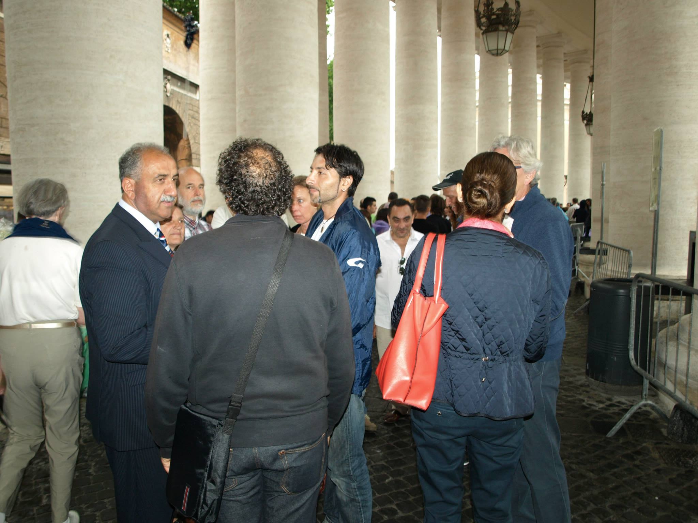
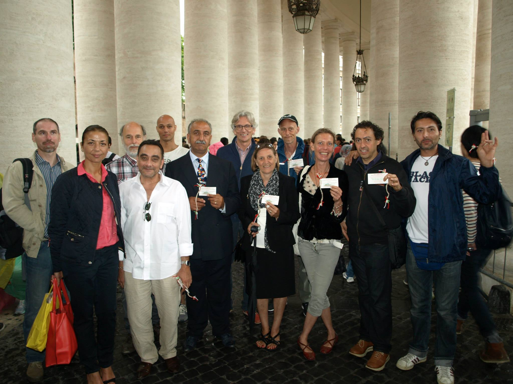
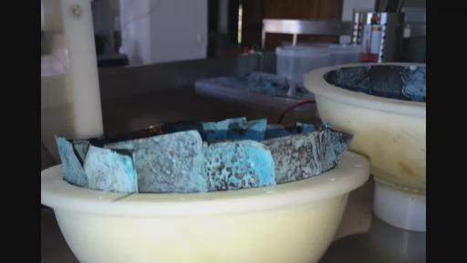

在线观看：http://www.livestream.com/kesheworkshop/video?clipId=pla_29c6ad8f-64fd-4e20-8239-b7c3335f6ded<
2014-6-19日太空学院第十五次教学
口译：漫步环宇
录音：漫步环宇
打字：KESHE_HUMAN、水莲、一心、彼岸花
复制：KESHE_HUMAN
统合：KESHE_HUMAN
00:00:00开始
（00:00:34开始有声音）
JOHN：好的，那么现在我们已经在SKYPE上面了，已经有4-5个人了，有LUDMIL,VINCE，还有MARKO。好的,MARKO可以来和我参加我们的网络教学，我要把麦打开这样的话。
RICK：好的，我希望现在在线的网友能够听到我的说话，现在做一些简单的调整，希望能够调整好，现在已经就是第15的网络教学，没有想到这么快就第15次了，有人跟我们说今天将会有2个链接。今天我们要把这2个链接做好，这样我们会有一个更好的链接，是来自意大利的链接，所以今天JOHN和你还有谁呢？
JOHN:MARKO和我在一起。
RICK：好的，KESHE先生在吗？
JOHN：你要重新要请他。
RICK：你是说要用他的SKYPE号码邀请他吗？
JOHN：是的。
RICK：好的。
JOHN：这是唯一的方法邀请他。
RICK：好的，我一会去单独和他连线。哦，又掉线了。我要先和太空学院这边联系一下。
JOHN：和太空学院链接没有用的，因为现在那边没有人，那台电脑现在还在实验室当中，它之前在实验室中，但是现在那里面没有人。
RICK：哦，明白了，今天JOHN和MARKO在一起了，那你们现在在哪呢？
JOHN：我们在家呢。
RICK：哦，这个答案太狂野了，你们还不如说我们都在地球呢，（笑）你觉得我现在是不是应该和KESHE的SKYPE链接呢？今天还可以和YVAN和ARMEN建立链接。
JOHN:ARMEN今天来不上。他儿子可能要到米兰去，所以我想YVAN可能会来。YVAN应该能够上来的。
RICK：你等一下我接到一个邮件看看是什么情况。我看看能不能把他链接过来，我弄一下。我现在跟YVAN联系不上，除非他和我联系才能联系到他。
JOHN:MARKO和他联系了一下，你去跟他联系一下吧。
RICK：好的，我从KESHE那边接到信息，所以我要现在试着和他联系一下。好的，我看到他的账号已经在SKYPE上出现了。
KESHE:早上好。
RICK：早上好，你好.
KESHE:可以听到我说吗？
RICK：可以，听到的非常清楚，能听到你的背景一些噪音。
KESHE:是的，我在米兰的街道上，因为我宾馆的连线不好，我走到了外面了，
RICK：这是弥赛亚在行走的街道上我和我们在联线呢。(笑)
KESHE：我在宾馆联线的时候总有故障，可能因为安全的原因所以我要出来，外面的天气很好，阳光普照，现在什么情况？我们是不是已经在线了呢？
RICK：是的，我们已经做好准备准备开始这次的教学，现在基本上来说还没有和YVAN链接上，那么和他联系一会没有联系上，我想一会联系上就可以开始了，我想MARKO也在和他在实时的建立联系，但是很明显他们之间还没连接上。
KESHE：没有问题，看看他能不能上来，我昨天也和他交流过。
RICK：好的。
KESHE：这也是我们的第一次知识寻求者散布在了世界各地，有3-4个不同的地方。
RICK：是的，这是非常有趣的，把所有人着急到我们的网络交流中吗？我想说的是在这个过程中你没有交流的时候把麦克调节静音，这样就不会有一些回音噪音，可以把噪音降低。现在我们基本上可以做好准备来开始我们的网络教学了。这是第15次知识寻求者的网络教学。所以，现在可以正式的开始了，我们现在已经和不同地点的知识寻求者，现在也请到了凯史先生，所以现在我们来看看本周有什么新的消息，我们知道你们在FB发布了相关视频，和知识寻求者去了梵蒂冈，看到了一些相关视频，包括看到在FB页面上你们也发布一些相关视频，有关在梵蒂冈的相关视频，我们也看到庆贺的视频。在保加利亚我们也看到了一些人在上面舞蹈跳舞的视频。（梵蒂冈和保加利亚视频下载：
http://pan.baidu.com/s/1bn3YHe3
）他们聚集在一起也是为了来支持凯史先生他的这些为了递交和平邀请函这个事情。在意大利，实际上是在梵蒂冈。所以可能我们会听到更多有关这方面的消息，同时我也相信我们还会听到更多有关在本月30号的时候，有关邀请世界一些宗教领袖参加这次和平会议的有关情况。那么包括邀请世界的各国政要，当然主要是世界宗教领袖。邀请他们在30号的时候参加在太空学院所召开的这一次和平会议。那么如果我们能够在这次讲座当中了解更多这方面的消息，也是非常不错的事情。如果还有其他的太空学院的消息的话，我们也是非常乐于了解知道的。还有哪些来自意大利的消息能够让我们了解到呢？所以现在我就把麦交给KESHE先生。
现在他可以向我们介绍这些事情了。
KESHE：早上好，无论你在哪里。到目前来说呢。现在我们正在从罗马回到意大利的过程当中。尽管其他的一些知识寻求者都已经回到了太空学院或者其他他们所住的地方。现在我们仍然还在等待来自梵蒂冈的确认，就是对于我们的邀请做出回应的确认。目前来说，自从我们提交了邀请函之后已经有3天的时间了。我们也希望在明天的时候，我们能够收到他们的一个最后的确认，到底是来还是不来。需要理解的就是我们并不仅仅是把这些邀请函文件提交给了教皇，同时也包括了整个和平进程的文件包，都已经提交了上去，还有就是人类走向何方这个文件。也都提交了上去，这是第二次提交这些文件了，提交给梵蒂冈。我们希望我们能够收到一个比较积极的行动。我们能够最终达成凯史基金会的一个和平的进程，或者说和平的计划。我们的网站站长已经在向世界各国政要和宗教领袖发送这些邀请函和文件的过程当中。我们也得到了确认，就是交给哈梅内伊阁下的这些邀请函和相关文件也已经亲手交给了他。在本周的时候，因为我们内部有可以直接和他进行联系的联络人，在我们的内部结构当中。像各位所知道的那样，伊朗是一个热爱和平的国家。我们希望我们能够获得来自哈梅内伊阁下的支持。其他的邀请函也送给了犹太教，犹太教的领袖，哈维夫的，也交给了其他的一些天主教的领袖。还有就是基督教的领袖。分布在世界各地的。那么现在我们需要进一步等待和观察我们需要的结果。我们已经设定了在6月30日的日期来做为一个相当于是试金石，来测试的一个时间具体的日期。那么像我们上一次是所说的那样，我们实际上并没有期待改变宗教领袖他们现在的这一切做法。但是他给了我们这样一个基本点来做对比。那么我们要来观察他们的回应是什么，我想他们来自不同的宗教领袖的回应可能是不一样的，或者说不同的国家所以回应也是不一样的。我们也希望在我们离开罗马之前，从离开罗马之前能够收到一些回应。那么整个的这一些行动背后的概念不是去采取一个强制的措施来，也就是说这些邀请函并不是强制宗教领袖，或者强制世界宗教能够相聚在一起。而是去鼓励这样的一个结构，是通过这样一种邀请的方式，来希望他们能够聚集在一起，希望他们在这个过程当中能够改变整个人类的进程。
很多人都有一种误解，有关宗教仪式还有人们的宗教信仰。实际上现在越来越明显，宗教机构他们是有这种何等的影响力，是在我们生活的所有方面都有一个影响力，实际上是一种政界人士他们都没有办法通过一向法律，如果说这项法律没有通过这个国家的宗教领袖的同意和批准，那么它也是无法通过的。实际上有些人他们就以为这样一些法律都可以很轻松的给予通过，那么当政界人士，政府中的工作人员他们想通过一项法律的时候，实际上这些法律要最终送到宗教的行为准则委员会的手里去进行审核。他们要来评估针对宗教方面和法律，或者宗教方面是否有什么样的冲突。所以实际上宗教领袖他们无论居住在哪里，他们对这些事情都会有一个最终的话语权。但是实际上很多人都没有意识到这一点，毫无疑问世界上的99%的规章制度还有法律，他们的最终决定权都是由宗教行为准则委员会来决定的，或者说对这些行为规范和法律如何能够适应人们在宗教层面上被人们所接受。就像我在上周所展示的那样，上次就是在上一次网络教学中我也各位分享，宗教领袖在2012在G8会议之前，他们的一次聚会上所提交的一些信件上的内容。这些世界各国的政要他们聚会之前，首先要听取宗教领袖的咨询。所以说即使是在那样高一个层面，所有的总统世界政要，他们都需要得到来自宗教领袖的辅导和指引。所以人们实际上直接进入到了所有问题的根源当中，同时也找到了解决所有问题的根源，那么我们所面临的所有问题的根源，就是将人们分裂成了不同的信仰，在这个过程有的人就发了横财赚了很多钱，如果现在同意统一这些信仰宗教，人们仍然可以赚取大量的钱财。那么这一次是为了整个人类，在即将举行的21-22号讲座当中，它将在意大利在周六周日举行。（演讲内容：
http://note.youdao.com/share/?id=632fef2757ad1e1e32389436ed740dd4&type=note
）我们将会展开一个新的篇章，在这个科学的层面上，那么其中会有很多内容都会回到行为规范上。就是关于宗教领袖的行为规范和行为准则上，有关他们如何来看待这些事情。那么他们如何来支持这些事情，因为如果没有了这些宗教领袖的话，我们现在所处的世界，实际上就没有真正能够解决人类面临问题的方法了。他们知道这一点，但是他们却用这一点来为自己牟利，如何能够满足自己的利益。现在我们要让他们有一个更好的了解。就是说宗教领袖你们个人的这些利益在整个人类利益面前，比不上整个人类整体的利益。就像我们所说的那样，我们也没有期待在6月30号有任何一个领袖参加我们所要举行的会议。这是很明显的。那么这是已经知道的一个事实了，但是我们把它设计成一个基准点。我们知道在第一次的时候什么都不会发生。比如在1-2年前我们在邀请各位驻比利时的大使来参加会议的时候，也发生了类似的事情。我们看到了那些针对他们的压力。而到了第二次我们再次邀请他们去参加和平会议的时候我们注意到他们压力已经减轻了，我们也看到了第二次的大使级会议的成功。所以这一次也是算是第一次的邀请，通过我们的科学技术，无论怎样会让我们的世界宗教领袖聚在一起。这个解释实际上已经是很简单的了。在我们前往罗马的前一天，也有很多其他知识需求者和我们一起前往罗马，我也要在这里向他们表示感谢，还有其他国家的这些民众也和我们一起前往罗马，我也要一定向他们再次表示感谢，我想有大约将近16人围坐在桌子面前，一共有将近16人。后来我们提交了文件之后，我们一起到外面去用餐。用餐后我们把文件提交了上去，我们能够看到有这么多人参加这次活动也是非常高兴的，它也让我们了解到人们可以在以这样一种非常简单的方式聚在一起，为了整个人类的利益。那么就像我在前一天对所说的那样，对知识需求者说的那样，我在周六的时候聚在一起说的那些话。我就对YVAN说，反应器E号，它有一个金属的内核，如果你对这个星体组合比较熟悉的话，这个反应器就实现了12高斯这样一个数据。
YVAN:早上好，我是YVAN。
KESHE:YVAN，早上好，我们现在在线.
YVAN：哦，我知道了。好极了。
KESHE:所以我们已经实现了12高斯，这是第一次反应器实现了这样一个条件在三维的条件就是在XYZ状态下，没有影响到其他反应器，实际上它已经实现了等离子体的打开，那么在没有往里面输入任何的东西就在它这种自由的状态下。或者说我们在周五的时候实现了这样一个条件。那么JOHN和MARKO、ARMEN他们都已经按照他们之前的约定给这个反应器装好了这些气体。其中一个反应器做出了反应，当我们看到它有一个非常好的运行，我想基金会在它的研究实验室当中，最终将会实现整体的提升。在星体组合的反应器上。现在我们已经看到了一些反应，可不可以请有人把这个麦克打开，可否请你把它关闭呢？我听到了一些背景的噪音，HELLO。我想可能是我的问题，我的麦克我关掉，所以你需要理解的就是这些都是我们的一些最新进展，这也是为什么我们会前往罗马的原因，我们实际上在科学和知识上已经取得了巨大的进展在过去几周，而且是特意的没有把它通过公开的方式公布出来。随着这次知识寻求者知道我的工作方式，我的解释实际上并不是我们要去释放信息的问题，而是我们是否了解释放信息的问题，而是什么时候和如何来释放这些信息。那么实际上我们在这方面是非常擅长的，我们实际上听取了在政治外交方面的顾问给我们的建议。那么他们给我们支持提供这些建议，他们在很多方式上通过实现提升并且将人类送上太空，那么人类实际上是被强制来接受一个宗教，一个信仰。一个上帝的途径。因为在太空当中我们会看到这种造物，我们会看到造物的过程，我们也会理解造物的一些工具。所以不久这种对于祈祷崇拜的分裂，就是人类这种宗教信仰上的崇拜和祈祷最终将会过时，遭到人类自己的废弃。这也是由于科技发展的原因，由于这项科技所带来的这些知识。在未来我们将会和宇宙当中的造物有更深入的理解。我们实际上就会意识到我们等待了如此的长久，同时浪费了那么多的生命。在这些事实上都是一些虚伪表面的所谓的建筑结构上，而并不是在人的内心和灵魂上。我们的灵魂知道什么是正确的，这是我们具体的物理的结构，将我们分离了开来。在非常短的时间中，向我经常说的那样，宗教领袖将会遵从一些新的科学，以及它们将给我们带来的变化。并不是他们落后在后边。然后。实际上我们已经通过这一次的邀请让他们有一个体面的方式来避过这样的一个尴尬，就是他们可以利用这样一次机将一切朝向一个正确的方向来修复好。他们可以把整个的人类信仰聚合在一起，就是我们可以将世界，那么人类将进入到一个崭新的周期当中以一种和平的方式。如果能够实现的话，我们知道在30号的时间，30是不会有人来的。我们已经为第二次的和平会议设置好了日期，而且我们也知道他们是会出席的。当他们第二次来出席的时候，那么他们再去的时候就不会再是世界宗教的领袖去参加这次宗教统一的会议。在参加第二次世界宗教统一的会议中他们就不会宗教领袖这种身份来了。他们再来的时候就会成为从属的身份，因为他们需要来适合当时的结构，就是适应这个新的结构，因为这个结构是人类进程新的周期所带来的。这也是为了他们设置的，我们理解这些结构，同时我们理解将要发生的这些事情。但是就像我经常说的那样。当你第一次的把东西公布出来的时候，他们总是不以为然。但是即使是在本周周六-日我们将要公布的一部分的事情呢，将会给整个的人类强制的代入很多新的东西，新的方式。我们会再展示一些新的结构来显示事情会以什么样的方式进行。一个非常重要的问题就是并不是去遵从，
或者将世界的宗教领袖聚集在我们的桌子面前。这一步已经结束了。我们已经给它设置了最后的期限，到周一我们已经提交了这些信函。我们已经邀请了这些各国的政要。我们也将这些邀请信函发给了这些世界的宗教领袖。那么现在我们如果没有收到任何回应的话，在某种程度上我们也实际上试图去给这些人一个体面的离开的方式。一个非常优雅的方式让他们离开。但是现在随着我们技术的进一步的发展，所有技术的一个实现，那么现在他们已经没有了选择，只能遵循人类的统一在所有的结构上。我们对人类的财富实现一个公平的情况。然后相对于造物主来说，让人们能够以正确的方式来行事，而同时一种同样的方式下对整个人类来说都有这种正确和平等的意义。就像我经常说的那样，凯史基金会在过去这些年当中看到的这些和平的机构和组织之间的一个不同就在于，它并不仅仅只是在不停地留在谈话上，而是我们自己拥有技术和专长来强制的实现，创造和平的条件。我们可以看到之前的绿色和平组织他们在过去的这些年中做的这些事情，他们收到了来自东西双方的支持。当时柏林墙被推倒了，
我们看到在过去的这些年当中事情的发展都出现了什么样的变化。在几个月前伊朗还是世界邪恶轴心国之一，当我把和平之手伸向美国的政府官员的时候，当他们向我们索要了U盘的时候，而当过去的这两周的时候我们就发现了，美国和伊朗现在竟然相互走到一起要相互合作。伊朗要出兵来平息在伊拉克出现的叛乱。所以你看到政治它实际上既没有父亲也没有母亲。它实际上就聚集在风里面，这个风最终吹到对谁有利的地方他们的就会吹到哪里。他们会改变的。我们的这项技术实际上就不会有利益，因为每个人都会得到它们所需要的利益。凯史基金会的这些运动还有这些科技，我们所带来的，还有我们所用的这种方式来发出的邀请函。发给教皇的这些邀请函实际上就预示着整个旧的结构就结束了。那么争斗是没有用的，我们从来就不会去争斗，我们只是去通知他们，让他们自己加入我们的行列。如果他们不加入的话，我已经要求了我们的网站的站长，我们的这个U盘当中的资料现在已经被下载了多少次了，现在它的下载次数已经超出了我的想象。现在已经有太多的人下载了这些资料，这个已经超越了上千万的数量，那么不仅仅是下载这些资料。他们实际上也是为了未来把这些信息储存下来，等到时间上成熟的时候他们能够理解这些技术和知识，到时候你们在网上找不到，你们就可以在网上储存的地方看到这些信息，那么最近有些科学家就对我说，这些U盘中的资料实际上就已经成为了指南，对人类来说是一种指南，就是比如说你需要到教会去得到一本圣经。比如说你要到清真寺获得一本圣书。这些书它实际上包含了人类的行为准则。相当于通过这些专利人类理解人体的物理形态，
他们的需求都可以获得满足，剩下唯一的事情就是需要他们去服务，他们如何为人民去服务。因为他们可以用这些技术区做他们想做的任何事情。那么今天在午餐的时候，我们收到了一个我们技术它的一个分析报告，这个分析报告的内容我们也会在周六-日的时候向大家公开。我收到了一份邮件其中有一张图片，在昨天的收获来自和我们基金会合作的人。这个也是和福岛的情况有关系的。这位先生我们之前也和大家谈过，和我们有过密切的合作，也是和日本这方面也有密切的合作，他们所拍的照片是来自于凯史基金会的这些材料，在福岛的发电站外面拍了这些照片，然后他们说我现在就在福岛核电站的外面。所以实际上我已经打开了锁头的大门，你们知道我们在说什么，我们知道他们发生了什么。那么同时我们也不能够忽视，我们做这些事情不能够像过去那样，这些虚伪的他们不能够再次阻挡我们前进的步伐。我们要选择这种符合逻辑和正确的道路，同时对每个人都是公平的，这是我们要面临的问题，以及要做出的改变，那么我在来到罗马它也是符合某些特定含义的。也解释了这个问题，我们的知识寻求者都返回了各自的住所。他们要办一些有关凯史基金会结构的这些事情，确定凯史基金会发展结构的一些事情。为什么我们要做这些事情，因为它实际上是为了将一个旧的结构中止。那么整个意大利的政府的结构和这些官员都知道这些事情。所以实际上我们都得到它们的合作来将这一切结束，将这些旧的方式结束。但是这一切都是需要时间的。它并不是魔术，并不像我们看到的那些魔术你把两个半环放在一起就成为一个完美的圆环了。
这一切都是需要时间的。需要理解并不是来自我们的理解，而是来自世界宗教政要的理解，更重要是来自世界普通民众的理解，普通民众需要理解目前的一个状况，我们的手中都有什么，会有什么样的变化。以及我们如何来适应这些变化。你不能够把它认为是一种非常简单的方式就可以实现的。然后以为说大家都会非常公平，所有人在第二天都会有一辆汽车，每个人都可以拥有他所需要的食物和饮品。我们在做这些事情的时候是需要先把它的结构给设置好然后才能进行的，我们要先把平衡先带进来，所以这一切都是需要时间的，需要几个月或者几年的时间，很多人都希望今天就发生改变。就像我和ELIYA所说的那样，我非常感谢她从保加利亚那么远的地方来到罗马和我们参加活动，来到梵蒂冈参加这次活动。她说我们现在就需要这种改变。如果我们现在就促成了这红改变，那么这个世界上99.9%的人都没有理解这一切，但是他们却都想得到它们想要的而且更多，这样就会给整个世界带来更大的混乱，所以人们需要事先接受这些教育，所以我们要把教育体系设立好。并不会很多年后发生，它只需要几个月的时间的事情。然后让人们参与，理解，以及如何能够实现这一切，整个结构必须要正确。我并不会表现的很急切，也不会到处的急于办成某些事情或者迎合某些人，我们做的事情实际上也是根据结构的需要来去做相应的事情。然后让人们能够理解的方式去做这些事情。如果有人认为我们去了梵蒂冈，我们到梵蒂冈是把这封信提交给教皇。教皇会上下挑动说：“是的，我们会去做这个事情。”但那是童话故事。你们需要理解的是这一切都意味着什么。（第一次翻译截止00:32:05）
你需要理解它的含义是什么。将这封信提交上去的含义是什么，那么这封邀请函现在已经传遍了互联网，我知道这个事情，因为意大利人已经把整个这个过程做了视频，我们不久也会公布原始的视频，


（16日梵蒂冈现场）等我回到意大利的San
Lorenzo（太空学院所在地）之后就会做这件事情。对梵蒂冈来说要发生的转变是巨大的。那么各位也已经读过了“以我之名”这封信，“从这里人类将走向何方”，也阅读了“和平进程”，也就是我们在过去的两、三年中所公布的那些那些信件，那么它实际上意味着由宗教领袖所提供的这种指引和指南的结束，这就是它的一个明确的含义。当普通的民众，当教皇，当所有的传教人员，当他们明白所有的宗教实际上都合为一家的话，那么世界上所有的民众都可以朝向同一个方向来努力，不是以名义的方式，而是以现实的方式去相处，就像我们在邀请函当中所写的那样。（邀请信：
http://note.youdao.com/share/?id=93c3cd0825109c485f63740382799388&type=note
）那么它实际上就意味着，在过去的两千、三、四千年的宗教领袖对普通民众所要做的这种指引，或者是指南的作用已经结束了，这就意味着他们需要去接受，现在他们就处于这种过渡的时期，来带领他们的信众和信徒和其他的这些宗教来实现统一。他们不会先脱掉他们的长袍或者放弃所有的这些权利和身份，然后就承认说：好了，我承认弥赛亚在这里，现在改变的时间已经到了。实际上在整个的转变的过程中是需要他们的，需要他们来向民众传播，教导民众这是后面需要什么。那么这个转变的时期，它意味着什么，需要什么，那么再去创建一个新的宗教和教派是没有任何意义的。我们要使用已经存在的这些信仰的不同的道路来以正确的方式来完成这一项工作。实际上并不意味着一个新的宗教又诞生了，然后大家又要按照新的宗教的教义去行事，并不是说我们又找到了一个新的方式，不是那样子，实际上我们过去的这些宗教的做法也都是正确的，但是我们需要找一种方式，就需要以这种方式来完成，人们这种方式它能够完成。这种方式就是适合人类的方式而不是通过那些名义来完成的，那么这就是要发生的改变，那是我们一直在谈论的事情。那么如果他来了，如果人们谈论“哦，哈梅内伊都要来了，弥赛亚（救世主）都来了，所以这一切都该结束了。那么教皇也会说这是结束的时间了，不是这样的！我们需要这些人在过去的几百年，上千年所建立起来的这些渠道去以正确的方式来指引民众，以这种和平的方式来实现这个转变。我们知道我们在做什么，我们之前做过这样的事情，这并不是一次演习，但是它却需要让人们汇聚在一起充满爱和关怀，并不是因为他们必须这样做，因为他们需要，如果他们必须要这样做，实际上我们就会再一次将过去所产生的那些问题带出来，它只会是一种暂时的行为或解决方法。那么这次他们想去实现这种转变，是因为他们想去做他们关心这件事情，因为他们想实现这些事情，那么我们就把它交给他们，这就是这封信的目的，也就是这次邀请的目的。很多人就问我说，可不可以让我解释一下“以我之名”这封信的含义，可不可以请你更多地谈论一些有关精神领域方面的一些问题。那么这种精神方面的问题，它实际上来自于一个统一的公平的源头，它所谈论的实际上在我们具体的物理形态和灵魂之间要达成一个平等和公正这样一个关系，这里没有任何的区别。一旦你理解了你的灵魂所处的层面，也就是说灵魂是存在的，而你生活的这个层面是在你的具体的物理形态当中生活，然后你就会理解了这个造物的目的。
所以现在呢，实际上就是给这些宗教的领袖足够的时间来理解这些事情，理解整个的过程。那么问题的根源并不在于宗教和这些不同的名义，问题是有些人他们就注意到他们可以去影响或利用自己的权利去滥用他们的权力，去凌驾于别人之上。那么我们现在也在观察，最终会是一个什么样的结果。就像我昨天所说的那样，我们所传播的这些知识，将会强制这个改变的发生，而不是需要用这些长剑、枪炮、或者是战舰。这些宗教的领袖，让他们来理解这一切，实际上需要很多的改变。就好像各位所知道的那样，我们现在在罗马又等候了两三天的时间，希望能够得到他们的回复，这也是相对于我们的基金会的事情来说，无论我们走到哪里，无论我们坐在什么地方，无论在罗马的什么地方，我们看到很多的传教人员和修女，那么这些人他们的目的是什么呢？他们的行走，他们和别人的不同只是他们穿的衣服不一样，那么我们看到他们的行为和其他人都是一样的，所以实际上他们之间没有任何的区别，但是他们的真正的区别是他们本来应该去指引民众去认识到从具体的物理形态去达到灵魂的层面上，但是这些人连他们自己的路走迷失了，他们还如何能够指引其他人呢？这就是问题的根源！他们去饭店，他们到不同的地方。比如说，去购物，他们本身就希望自己能够和别人与众不同，所以说这些问题都已经根植于他们自己的行为当中了，这也是我们所看到的所有的宗教领袖的问题，无论他是以什么样的名义的宗教的一个方向，或者是以什么样一个宗教的名义存在的宗教领袖，为什么当你穿上了这身衣服之后呢，你就会去期待着这样的一种分离，或者说比别人更高一头呢？那么这也是将会改变的地方，这是我之前一直在解释的地方，最近这些人所说的这些事情，像我们的知识寻求者。你在太空当中的时候，太空飞船的空间是有限的，它可能在直径上有200到600米的这样一个空间，那么没有办法在一个角落修建一个大的宫殿，在另外一个角落修建一个法庭，或者在另外一个角落去建一个教堂，教堂？（00:38:40GEPO?）已经结束了，所以在飞船的周期当中我们实际上都是平等的。所以呢，我们在新的飞船时代，我们都是平等的，很多人还没有理解这个问题，但实际上我们已经设定好了改变的步骤，当你坐在飞机当中从一个国家前往另一个国家，上面可能有的乘客他可能刚刚攒够了足够的钱想从一个地方到另一个地方去治疗他的癌症的疾病，他会坐在同样的一个飞机当中，在同样的这样一个飞机容器的盒子当中，他会和这个世界上最富有的人坐在同一个盒子当中，这会是一些国家的首相或者是总统，那么他们也会乘坐这些所谓的高等的商务舱，所以实际上这里面没有任何的区别，那么这也是人们还没有理解的地方。在太空当中，实际上这些钱就没有意义了，比如说有人就说，可不可以让我给你100欧元来换一下你的位置呢？或者说用1000欧元来换你的宇航服。实际上这都没有意义，因为每个人都是平等的，在同样的一个水平上，
这也是我们也希望通过这样一个和平的进程，给我们整个的星球带来的这种改变，这也是为什么我们用这样一个和平行动，向世界的宗教领袖还有世界各国政要发出我们和平的邀请函。世界各国政要他们相当于是身体，而这些世界的宗教领袖他们就相当于是身体的灵魂，和灵魂是有关的，如果你不把他们两者给聚合在一起的话，我们就不会成功，因为其中的一个会对另外一个产生影响，就像我在最初之前这些年一直在说的那样，任何国家他们实际上都是平等的，不会有这个国家比另一个国家更好的这种情况的存在，因为整个的这个世界都会成为一个国家，会成为一体，所以这些就是存在的问题，这也是届时将要发生的改变，我不是希望，我知道我们都会实现这一切的，我希望我们能够实现这一切。但是这将会是在我一生的时间要去做的事情，它不会超越我这一生的时间来实现这一切。我们要以正确的方式将人类带向宇宙，我们会将人类作为一个整体带向太空，那么人类它有不同的肤色，还有不同的宗教的信仰，长得也各有不同，因为如果你到那个时候还没有前往太空的话，实际上我们已经为未来的分裂撒下了种子。我也最近在观看世界杯足球赛，就像很多人知道的那样，我也是个足球迷，我们支持国家，或者是根据语言来支持不同球队的方式，我们最开始的时候呢，就是从某些球队开始，有很多的球队，我们支持这些球队，最初可能因为这些球队是来自于我们所住的国家，或者说我们最初就喜欢这些球队，那么随着这些球队进入到第二轮的比赛呢，会有一些新的球队出现在我们的视野，于是我们就需要去选择新的我们喜欢的球队。因为我们以为这些新的球队当中，其中有一些可能会成为？？，然后我们再一次进入下一次的比赛当中，第三局然后球队的数量再进一步减少，这次我们可能会只会看到6-8个球队。然后我们再去关系你的是谁会成为球队的冠军，这样的话我们看到的球队会越来越少，之后我们就会去选择前四名的球队，喜欢支持足球的这些国家要观看所有的比赛。喜欢支持足球的这些国家要观看所有的比赛。随着这些球队数量的减少，最后我们要去观看决赛来希望能够知道谁能够成为冠军，然后比如最后胜出的是巴西或者另外一个国家，然后我们知道他们是冠军，实际上这也是宗教信仰的方式，我们的最终结果也会是这样的。随着越来越多的人看到我们科技的进步，之前许多有选择的道路就会结束，最终就会汇聚到同一个方向上来。这一切都是需要时间的，它并不会通过仅仅置于某一个人就实现这一切的，就像我们所看到的是，能汇聚成“一”之后，我们就会在（名义）数量上消失，但是我们会成为一个整体，这就会带来成功。这也是需要具体知识传播的原因，实际上我们现在已经或多或少进入了最后的阶段，现在我们已经到了相当于前4名这样一个阶段上了。就是在宗教界的这样一个局面，当4个球队经过这样一个比赛之后，或者说这4个宗教都坐在桌子前商讨这个事情之后，最终成功的话就会汇合成为一体。这样的话实际上我们就实现了我们的目标，就选择了这样的一条正确的道路。这就是我们达成这样的目标，就是和平的邀请信函所要实现的目的，就是在和平谈判桌上，再给它最后的一个推力，这就是最后的一次行动。经过这一步之后，就不会再有任何其他的这些事情了，剩下的就是科学的统一了。当科学实现统一之后，当我们再次前往太空之后就不会出现宗教，
也就是在太空中就不会有宗教的存在，因为它剩下一个。剩下就是向我们的造物主的祭拜，那么当人类明白这一切之后，人们将很快的时间当他们前往太空中呢，同时他们也认识到那些人无论他们是僧侣，实际上他们也是星球上的一个难民，我们就明白我们的问题在哪里，问题就在于那些为了自己卑劣的个体存在和具体的物理形态的存在都是为了金钱和权力，让整个人类失去了方向，都是为了他们个人的利益造成的。很抱歉，我在这方面说的有些多了。但是我实际上也是最近收到了很多人们提出的这方面的问题，我就会再解释更多的事情，就相当于我们所做的这些行动的原则它是什么。我希望我现在把事情说的很清楚了，如果我接受到了来自任何宗教领袖的确认的话。我们也会公布出来的，因为他们这么做的话，他们实际上是充满骄傲的来做这些事情，如果他们不回复的话它实际上就意味着想躲开保留原来的这样道路或者他们不知道该如何回复。实际上对于教皇来说这样做也是很不容易的，把几千年两千年形成的这样一种祭拜方式放心下，和凯史基金会和知识寻求者在一起开会商谈，那么这实际上是他们没有办法接受的这样一种认可。如果这样的话将会对梵蒂冈有什么样的交代呢？他们将会对所建造的所有这些教堂将会怎么做呢？因为之前已经有如此之多非正义的事情，已经做出来了。接受我们的邀请就意味着，相当于在过去的1千、2千多年的工作呢？或者3-6千年这种非正义的行为，他们也不想去负起责任，这也是问题的所在，他们想把球传给下一个人的手中，就像我所说的那样我已经接受了电视台差不多5-6个小时的采访，那么这些节目将会在不久的将来播放。通过接受这样一个和平进程，它意味着实际上是对过去信仰的一种结束，还有这种名义上的区别，通过宗教的领袖。它实际上就意味着他们过去工作的结束。你怎么能够去指望一个人自己下岗呢？这需要是非常勇敢的人才能做出来的，而且是需要行为端正的人才能够做这样的事情，人们怎么能够说我会从这个职位上退下来。这个工作一直支持了我的一生，这种情况会有一个很激烈的争斗。或者我们会去拒绝忽视这个事情，实际上我们基金会不会去采取这种争斗的方式，我们实际上要去鼓励这种和平的方式和行为，你没有必要再次承受过去的那些虚伪的行为。很多人就告诉我说，为什么不去出版你的第九本的书，它的名字叫《灵魂的结构》，因为如果我公布了或者出版了灵魂的结构这本书的话，这本书我已经完成其中一部分的内容，很多宗教领袖他们就会选择自杀消失了，因为每个在这个星球上的人一旦他们理解了，他们自己对造物主和宇宙的关系，而它的美妙之处在于现在每一个人都可以给自己去传授这些知识，你不需要任何人的辅导或者指引，你不需要这些犹太教士了。在这个转变过程中，我们只需要支持的和帮助来自于这些人他们在最初的时候在听我们传播这些知识的时候，当时可能感到比较软弱的，但是等到他们理解了所有这一切之后就会发现自己和所有人都是平等的，都是一样的。你就会变得更加的强大和强壮的，因为每一个人都是一样的。
这种柔弱并不是一个具体的物理形态，而是在我们的灵魂之中。它是在我们的具体物理形态和灵魂之间连接的本质的东西，这也是我们这个新的知识的传播和科学需要让人们了解的。不会再有圣经了，也不会再有新的书籍被写出来作为人们行动的指引和指南。所有这些指引都在于人们的灵魂中以及它和人们的具体形态的一个连接，在很多程度上我之前也写了很多这些的内容来实现这样一个结构，也不会再有惩罚，如果你没有去弯腰10次的话，也不会再去收到惩罚，也不会再次因此而下地狱了，也不会有你不吃这个或者那个那么就会发生什么错误的事情。所有这些都是人为制造的，目的就是为了实现控制。当你去给它设定条件，实际上就是要去实现控制，有了控制就意味着某人会成为其中的老板，这样的话就会产生不平等。这就是如何新的秩序会是什么样的。法官和陪审员他们实际上都在人们的心理，同时也在于具体的物理形态和灵魂之间的链接当中。那么现在你来告诉我为什么教皇他不会回复我们的原因了，如果回复了我们去参加这个会议就意味着他将穿上普通人衣服，将意味着他放弃了他的地位，相当于从他的职位上辞退下来了。因为它是以上帝的名义造成了人类分裂的情况，因为他就是从这样一个职位上，实际上从对人类的分离是有责任的。这也就是将要发生的改变，有时间将是我们整个生命的周期的其中一部分，他们要有这样的一个周期和生命的时间，就是具体的物理形态身体的时间就会成为虚伪的事情。过程实际上是非常简单的，但是它需要被人们所理解，如果它没有被理解的话它就是虚伪，而且通过已经存在的结构得以向普通民众去正确的解释的话，人们就会知道他们向什么样的方向前进了，你不能够将一个宗教领袖直接就去除掉，然后说我现在要退休了，因为救世主来了。这样的话那么那些20多亿的这些基督教徒，他们该怎么办呢？通过梵蒂冈通过正统宗教，通过这些东正教，所有这些信仰不同的通道，普通的民众他们都需要被通知或者告知人类将会以什么样的方式将会朝向什么样的方向去发展，而在这个过程中没有去滥用去侵犯别人的权力，我们需要这样一个结构，这样一个结构已经存在了，为什么我们要去破坏或损坏这样一个结构呢？为什么要去消灭这个结构呢？
这也是要以现在这种方式接触这些宗教领袖的原因，实际上是让他们启动知识传播的过程来实现宗教的统一，然后将一切聚集在一起。因为人类现在已经做好了准备进入到太空当中，以一种正确的方式进入太空。这也是这次邀请函的一个目标，同时也不要期待这些世界各国政要和宗教领袖会非常欢迎支持我们的一个做法，也就是说不要去指望他们会看到这封邀请函之后就乐于来接受我们的做法来签署这些世界和平公约。因为这意味着他们要从他们原来的旧的职位上退下来。这意味着他们就会穿上同样普通民众的衣服，然后在同样的办公室中去工作，而不是以他们现在在结构的顶层所拥有的职位或者地位所能够穿着的这些衣服，不是的。
这意味着巨大的改变，如果一个教皇可以和普通民众一样走在普通民众当中的话，一切以正确的方式告知普通民众，那么将再也不会有分裂的时候了，那个时候人们就可以去听他们去说话，我们也看到了太多次这样的情况，就是世界政要他们暂时聚集在一起，都是为了他们金融上的利益，然后聚会结束之后，他们会颁布一个诺贝尔和平奖。好像他们真正的做了什么事情那样，然后他们颁发了诺贝尔和平奖，我们看到了它就是颁布给了本塔尼亚胡，然后颁布给了布什，我们看到所有那些人都获得了世界和平奖章，但是滑稽的是诺贝尔的基金是来自于杀戮民众所能得到的这些钱财，人们怎么能够去接受诺贝尔和平奖，而所有这些奖金都来自于那些公司，他们制造同时仍然还参与这些具有极大杀伤力的炸弹，仍然还能够造成大量民众的伤亡。很多人他们都不知道诺贝尔和平奖章是怎么回事，诺贝尔家族他们是研发和制造着地雷的还有炸弹的，也是通过一次巧合的机会，炸药，这个先生就去读出了他兄弟的讣告。但是这个记者就犯了一个错误。也是一次巧合，那么他到他兄弟的办公室。然后这些记者犯了一个错误。一个偶然的机会，那么他写的是活着的兄弟的讣告。他以死去的人的名义写的讣告实际上是背着活着的兄弟。它上面写到他是一个多么可怕的人，那么他制造了如此多的死亡还有类似的这些说法。然后他就说，这看来人们将会用这样的方式来认为我是这样的人吗？我一定要些事情让人们认为我是好人。那么他就推出了诺贝尔奖，所以接受这些诺贝尔奖的都是带血的钱。我们对这个事实却视而不见，实际上我们是在赞美凶手。因为这些钱财它是杀戮的原因，我们用他的名义，这里面有什么值得让人感觉很正义的地方，或者神圣的地方，或者有任何的高尚之处么？所以这也是为什么诺贝尔和平奖没有任何意义的原因。如果说曼德拉能够获得一个奖项的话，来自为联合国为人类所和平作出的贡献还有点用。我周围的人，他们就知道我之前听说过，我也这样说过，诺贝尔和平奖实际上是最让人可耻的奖项，最让人可耻的奖项。这样一个可耻的奖项赠与某些人，然后这些人还很高兴的去接受这样一个可耻的奖项，这就是整个的人类现在所处于的这种非常滑稽可笑的一个状态，它有什么用呢？它是用制造地雷炸药的人，他想用这些地雷帮助开矿的人，但是却用它进行了杀戮，因为他发现能够杀人的方式能够赚更多的钱，然后他就筹备了这样一个奖项，然后颁发给这些人。实际上获得奖项当中的很多人都和杀戮有着直接的关系。这样他们在做的一切都是OK的正常的了。而现在他们又给他加上了科学的名义，加上一个经济的名义。但实际现实上来说，它仍然还是带血的钱财。它以什么样的方式去颁布这些奖项。无论是谁主持这些事情而且以什么样的方式去颁布这些奖项这些都无所谓。
那些接受了这些奖项的人都是非常可耻的，因为他们也正试图去忽视我所讲述的这些形势。那么现在也是一个同样的状态，我们是为了公平而工作，我们通过技术来实现和平，通过和平的方式来使用这些技术，不允许它以这样错误的方式来使用这些技术。我也非常高兴的看到我们的技术在普通国家，以不同和平的方式展示出来，它可以以不同的方式来展示。自从我们从比利时搬出来之后，我们的凯史基金会，我们整个的技术就以一种全新的面貌呈现出来，因为如果通过对它的压制才使得我们能够实现建立我们现在所有的运作的结构，你可以把我们的网站论坛关闭掉，还有人想对我们搞暗杀活动。那么这些人他们还没知道这些改变。而本质上来说这些知识，这些灵魂，还有这些精神，科学的精神它的灵魂已经传递到了上百万人的身上。所以我们希望我们能够收到好的消息，在今后的几个月的时间当中，而不是在这个月的30号。但是我们要打开启动第一个步骤，就是我们敞开了我们的大门，现在是他们走进这个大门的时刻。在他们还没有进入这个大门之前，他们现在还穿着他们现在的服饰。不过他们在教会当中所有代表他们的地位的服饰，但是一旦进入这个大门当中，就要穿着的就是普通民众服饰，他们的目标就是去为人民服务，而不是为他们的长袍和他们的服装或者为他们的地位，职位去争斗，这就是他们现在和之后的一个区别，通过理解来进行转变，不是通过强制和恐惧来改变，所有过去的这些宗教他们总是去吓唬我们。如果你不这样做你就会遭到惩罚，如果你不去做更多的祈祷，那么你要下地狱的。我们给地狱下了定义，其实地狱有一个非常明确的定义。如果你的灵魂相对于其他的灵魂，去尊重别的灵魂。你希望成为其他灵魂的一个服务者的话，而这个灵魂它接受除了平等和正义之外不接受别的东西。所以现在你以同样正确的方式来计划你的人生，整个的结构需要理解我们在做什么。以及我们是如何来做这些事情，一方面我们要实现具体的物理形态，同时我们也会让人们去实现和灵魂连接的一个本质。现在有一个巨大问号，谁和如何和这些所谓使他们成为精英人士或者宗教领袖，这些人将会在自己灵魂上面做的足够正确。然后才能够越过这扇大门。一旦有一个人越过了这扇大门之后，那么其他人就会跟随而进。但是他们就会在观察谁会迈出这一步，然后就会产生相互你争我夺的局面，我们又回到了赛狗的比赛状态中了，如果我倒下了穆斯林会起来。如果穆斯林倒下了犹太教他们会起来。但是实际上他们没有理解所有人都是平等的，我之前在其中的一次网络教学中谈过了这个事情，我现在也记不住到底是那一次了。就是伊斯兰的宗教领袖他们就突然和凯史基金会产生了问题矛盾，当我在其中的一次网络教学谈到了这件事情的时候，当我们到了太空当中，地球在不停的旋转，现在你也不知道你当时处于哪个星系当中，这个时候你想要去祈祷向麦加，这些圣地在哪里呢？除非麦加在你的灵魂当中，
然后你通过你的灵魂和它连接在了一起，和麦加连在一起。通过它和先知连接在一起，通过先知又和上帝连在一起，你不需要祭拜的场所，所以你找不到，那么我将会成为什么样如何去祈祷来发现你的麦加或者你的梵蒂冈，所以这就是将要发生的改变，当我们前往太空的时候，不要忘记其实祭拜的场所就是你的物理形态和灵魂以这种正确的方式结合在一起的地方。它其中最大的一个问题始终不要忘记的是人类的弱点，这是一个最大的战斗，这个战斗这并不来自于谁是谁的宗教同一个信仰。当我去看一个非常美丽的女子，战斗来自于这个女子她是属于另外的一个男人的，她是不是我的权力，我的主意或者想法，如果我看到一个孩子，他非常的饥饿，我是不是会给他一些食物，尽管我知道这些食物是来自于我的孩子的。至少我看到这个孩子很饥饿，而且正在挨饿，如果我上楼如果看到楼上有水迹留下来，然后我只是离开它，因为我知道有人会去收拾清理这些事情的。而我呢可能会选择下楼，然后找一个抹布把楼梯上面的水迹擦干净。以免别人在下楼的时候摔倒而且把腿摔断，或者把腰拽坏了。如果那样的话，他们的痛苦就是我的责任了。实际上是意识到了正确的行为的一种意识。就是说能够认识正确行为的一种意识，认识到一种正确行为的意识会让你知道你到底是谁，需要很多的培训和理解，然后很多事情就会完成了，我并不会期待梵蒂冈会在周一的时候出现在那里，我不会期待因为我们周一去了一次梵蒂冈他们就会在6月30日的时候出现在我们的和平会议上，我也不期待哈梅内伊会出现在我们的这次会议上，但是这种为了平等的种子已经在他们的大脑中种下了。在他们的具体物理形态中种下了，就是将灵魂和具体的物理形态结合在一起，也就是我们工作的意义。将会发生在什么我们也在观察，但是它需要很多的工作，它并不会一蹴而就的。就像我们之前在比利时所做的工作，第一次去邀请那些大使参加会议。然后去第一次邀请世界各国政要。然后再去第二次邀请这些世界各国政要和大使来参加会议。然后一步步的去建造在这里的结构，建造一个结构是需要时间的，我们都是人，他们能够主导新闻的走向，新闻的传播。因为很不幸的，我们都没有掌管CNN或者BBC就可以完成这些事情。(第二次翻译截止01:00:02)
他们可以创造新闻．现实和事实就是实际上一切都是新闻．根据我们想成为的这个新闻，所以我们会在时间成熟之后去推送这次新闻．我要非常衷心的感谢来自于不同国家的
这些明星，他们全职和我们一起，在周一的时候一起前往的梵蒂冈.那些叫帮助我们，并且用他们的灵魂参与我们的这个活动的人士表示，还有他们向不同的宗教领袖，传导我们的这个意思的意义．我相信总有一天，不久我们都会看到，我们所有人共同努力的一个成果．然后它给我们所有人带来的好处．我们将会根据事情的进展来选择何时去公布这个事情的进展．我们不会再像之前那样，提前的来通知我们将要什么时候去公布这些事情．在本周的会议当中，我们会有一系列的一些
揭述或者是批露所有的情况．其中就会有一些事情涉及到，向凯史基金会整个结构的，这里问题的事情．也会涉及有关这个世界各国政要和宗教领袖他们的事情．有没有任何的问题？
YVAN:凯史先生你好！
KESHE：你好！
YVAN：非常感谢你所做的一切，为整个人类所做的这一切，我想我已经没有办法用语言来表达，我将如何的来感谢你所做的一切．我的问题实际上，基本上就是，是不是会更加的简单．你上次提到让所有的重要领袖机构呢，就是凯史基金会它这个机构它可以，实际上还有所有的这些宗教，通过你对一种是技术还是信息的释放。
然后让他们都变得没有任何的意义和作用了．那么你觉得用这样的方式去完成整个的事情是不是会更简单一些呢？
KESHE:如果你是这样做的话，你就会知道做为一个新的混乱局面，我们将会以一个非常缓慢的一个过程，最终会完成这个事情．但是它要以一个缓慢的进程来完成。实际上我今天早上已经解释了有关这方面的部分的原因．那么这种所谓的冲击，它实际上并不会有任何的帮助．很多人就说是否可以这样去做。它就像一个魔术师，做魔术表演一样．实际上我们本周所做的这些事情就是人们共同的一部分，和我们这些知识寻求者一起去做的事情。它实际上就像我在今天早上解释的那样，它是整个过程的一部分，但是在整个，在未来的这些星期和月份当中我们要做的这件事情．我们将来完成整个的这个周期．这个过程一次性的完成整个的这个过程，它会带来一种休克式的感觉．因为整个人类还没有做好对这方面的准备．人类还没有做好在如此短的一个时间内，经历如此巨大的一个转变的这个心里准备。这也是为什么在某种程度上，我们要去经过这个宗教领袖的这个帮助，来加速或者是促进这样一个过程，来建立第一个这个结构，就也是说整个这个过程的第一步。你需要理解一个非常简单的事实，那就是为什么我们要前往梵蒂冈，然后和他们去谈话的一个原因．你去观察所有的这些宗教领袖。所有这些人他们工作在那些长袍当中。
那么穿着长袍的这些人他们拥有了家庭，工作，还有他们的这些服装，还有住所，食物，都是免费的．有多少这些人，你觉得他们会说OK，在明天早上的时候，把所有这一切都放弃掉呢？到哪去找到住所和工作，他们没有别的地去，他们实际上还有一个人，他们依靠欺骗其它人来生活，就像我上一次所说的在英格兰有一个人，几周前提到他，他也算是一个红衣大主教的．他居然不知道强奸一个小孩子是犯罪的行为。他们除了犯罪别的他们什么都不知道．他们这个猖狂传教或者是长老，是这样的一些人，他们会反对改变，但是我们却需要，我们已经计划之中的这些改变。这并不是一两个人，实际上就是上千人，拥有成千上万的这样一些人以不同的名义，他们穿着不同的外衣来向上帝来不停的祈祷。你觉得他们明天早上会同意都把他们的外袍脱掉，然后说现在弥赛亚（救世主）已经来了，我们都来就是搬这边来做法吧，我知道这是可以的，我知道它是可行的，但是谁来养活我呢？我关门去买我需要去穿着的这些衣服呢？我的住所会在哪里呢？那么这些问题并不仅仅是，去来这里然后和他们说宗教的所面临的问题．这些人的这个立场转变起来就以这些人本身，因为他们将会失去他们的这些免费的午餐。实际上没有人想，犹其是在现在的这种经济的状态下想去失去这份午餐，这份免费的午餐。这就是我们遇到的问题．实际上这些反对的声音和行动都会来自于这些人．我知道这些事情，因为他们都已经习惯了，在别人的辛苦的努力的基础上来享受自己的这种努力的生活．如果你想给它加上什么样的名誉，所有这些让人目眩的这些服装，还有这些外套，他要花费你二百欧元，三百欧元，或者是美元才能买到．所有这些服饰都是免费赠送给他们的，还有他们家里人所有的这些，包括用的这些电，还有其它一些供应的服务都是免费给予的．你觉得他们都会很情愿的放弃这一切吗？如果你真的这样认为，那你就还是一个孩子。所有的这些住所，所有的一切都是免费赠送给他们的．你明白我在说什么吗？所以我们需要以一种非常缓慢的方式来促成我们的改变．那么人们他们能够理解，他们是如何被这些人所侵犯了他们的权利！然后同时还能拥有不再被他们侵犯个人权利的这种工具．但是他们需要有一种能够理解这些事情的方法，这种改变是巨大，但是要以一种他们的方法来进行，因为如果不这样的话，将会有一半的传教人士将会被挑选出来．另外一部分，我想说的是它并不仅仅是天主教会的，或者是基督教会的，而是所有的这个宗教当中的，他们以什么样的方式去侵犯个人自由运动的权利．当整个的改变都会到来，当人们变得自由的话，所以当这个人类在他具体的物理形态上，一个是身体上的这样，而且还通过我们的这项技术，我们可以，实际上就是会让他们来制造出他们生活当中所需要的最基本的需求，而不需要从别人那里得到这一切，原来他们直接就可以得到这一切，这样就不再受到别人的控制．只有在这个时候他们就可以使自己的灵魂得到给养。在周六和周日的讲座将会是打开眼界的一次．那么我之前也解释过这样的一个事情，当时是和这个MARKO（马可）解释的．实际上在这次会议当中，我们也会让人们对我们这些这样的技术有更深入的，全面的理解，
然后我们在之前也做了深入的细致的准备工作。在这两天的讲课当中，我们也会把你们都攒？？起来，到时你们就会理解，这是如何来运作这件事情．就是让人们产生信心，并且让他们知道如何来实现这一切．实际上有人能够理解我们所做的一切．我们看到我们周围基金会的这些人，他们做的不同的工作，但是他们还没有完全理解整个的局面。当人们开始理解了全局的情况之后，在未来的这些日子，星际接轨时，月份当中之后，我们就可以走朝向下一个环节去前进，然后我们实际上即使是这些传教人士，他们都可以制造自己的，实际上就是他们就不再害怕去保护他们拥有自己的住所，几天前伊万他就和我说过，他提到了当时我们在年初设定的这个路线图．他说到了九月份的时候，我们就要完成这件事情，因为你提到说到九月份的时候你就会提供给人们，他们所需要的这个住所，通过这个绿洲装置．我们知道我们的目标，我们也要朝这个目标去努力．我们会实现这个目标的．但是我们所面临的问题仍然还是，而且是在我们的学院当中．我们的知识寻求者，他们的实现这些目标的一个期待有些过高．因为我在这里所做的是一个指引工作，但是如果说他的期待太高的话，但是如果他们没有会它最基础的，基本的知识的话，那么这些寻求者，他们来到这里，他们所带的是一个物质的一种目标，或者说从物质的角度来观察看待这件事情．没有理解这种等离子，却试图去强制一个错误的知识，要给它强列在另外的一个知识上面．那么我做为一个指引，所需要容忍他们所犯的这些错误，但是我仍然就像我说的那样，我要给他们一定的推力，让他们能够了解更多的知识，以便能够完成这样一个漫长的，整个的进程．实际上我们看到的是同样的事情．是经过几个精进之后，他们已经可以自己来做一些事情，但是他们好像已经知道了，觉得自己已经知道了这些东西，然后开始去对一些东西开始去批评，来提自己的批评意见．那么应该有一些，存在一些批评意见，但是说过的这些批评意见要有知识含量，就是要有道理，而不应该是那种无知的这种批评．所以它实际上是一部分，实际上我们和其它的科研机构没有什么本质的不同．人们到我们这里来，也是有他们自己的一种理解的方式，达到他们自己的一种需求，也就 说他们本身所有的这个立场．那些带有纯洁的心灵到这里来，拥有一颗为人民服务的心灵的人，他们都是为了整个人类去服务．他们来到这里，他们会跟我们在一起，然后共同的为人民服务．他们会去把他们所学到这些传授给更多的人，你会看到越来越多的知识寻求者来到，加入到我们这样的行列当中．当然这里面也有一些人他们是有着自己的一个想法，或者是立场来的．
比如说有的人想去换一份工作，通过我们的这个凯史基金会．这些事情我们也是非常清楚的，有些人会有这样的想法．但是我们是从一个跳出局外的方式来看待这件事情的．我们会看到所有的这些所谓的像＂猴＂的模仿的这样的一些生意，商业模式，得等到人们都达到同样的一个水平．我们实际上仍然还是希望能够有更多的人来到我们这里，当然他们仍然其中也会有一些人还在试图寻找一些位置．因为他们离基金会比较靠近一些．然后我也在决定是不是要停止这一切。很多人可能知道也可能不知道我和大家说的这些事情．实际上离我们很近的这些人他们也都知道这件事情，几年前我说几年前我曾经给过一次，
在基金会的中心做过一次讲话．有一个先生他就来到我们的前面，然后说他是个教授等等．他得到了这样一个许可和我来谈话．我对他说，抱歉，那我什么时候得到了许可和你谈话呢？你为什么要得到许可才能和我谈话呢？然后这个人对我说，你看就旁边坐的那位先生和我说的，如果想有机会和你来谈话，要得到他的许可。然后我回答他说．我实际上在我这一生当中只和那个人说了两次的hello，就没说别的了。他可能能够允许自己有这样的一个权利，然后能够使你需要先通过他，才能够做为一个教授来和我谈话呢？我需要作为一个科学家来获得允和你谈话可能还需要一个许可。那么这就是有些人他们，即使是在我们的基金会当中，也有人他们想玩弄手中的权利，利用手中的权利来做一些事情，仅仅是因为他和某人说了一声HELLO您好，他就以为自己有了权力可以控制这一切，实际上我非常理解这样，了解这样一些人，实际上这些人他们是最需要教育的，让他们了解所有的人都是平等的。我在我们的基金会已经看到过类似这样的事情，差不多看到过三次了，因为他们离基金会非常的近，他们就想借这个机会来行使他们的权力。但是我知道他们的所作所为，因为我们都是同样的，我们在一起生活，吃饭、学习、工作，比如说和我们的知识寻求者，我们在一起分享我们的知识。因为我知道，在人类当中实际上是没有任何的区别的，也就是每个人都是平等的，我们都是一样的，但是我也意识到，如果你对某些人来说太容易接近的话，他们会错误地理解你的这种坦诚的态度，而我们也试图去阻止这一切，同样的问题也会发生在凯史基金会，如果我们不完全理解这些事情的话。我昨天对我的妻子说，你知道我们有16个人在午餐桌周围，我们从梵蒂冈回来的时候那么其中有四个人，是我，我的妻子，我的儿子还有另外一个和我们在一起的人，另外是12个人，其中你可以看到他们的这种真诚，他们知道他们为什么会去那里，就好象是12个使徒坐在桌子周围，但是它不应该这样一种方式来进行的。你们当中的每一个人，你们实际上是来自于世界各地的，为这件事情做出努力的人，去传播这些信息，把这些信息传播给需要了解这些信息的人，实际上你们每一个人都是整个人类的使徒，它并不是某一种信仰，某一个教派，或者是凯史基金会的使徒。这就是我们从始至终都要非常明确的事情，那么这也是将要来到的改变。我们都以同样的方式来行事的话，在我的立场上来看，我需要理解，需要来接受一些事情，还需要接受一些为了保护我的生命，需要理解一些折中的做法，但是我仍然还要强调一点，我们需要在人们中间，和人们在一起，然后让人们来理解事情该是如何来进行的，但是现在的时间和我们所面临的和处于的状态当中呢，我们现在有一些把我们自己隔绝开来了，那么在某种程度上好象我们离中心更远一些了，我们应该得到民众的理解，让人们能够看到，人与人之间是没有区别的。下一个问题。
YVAN：好的，我想再问你一个问题，在之前的几次教学当中你提到了当人们提到首原星体，你提到说它不应该被销毁，但是呢，有的时候人们需要把它给隔离起来，这也可能是由于他们个人的原因，可不可以请你再详细地解释一下这个问题。
KESHE：当你去一个特定的场体当中，然后你会有一个场体的混合，你需要重新排列所有的场体，就好象是我把你放在两个进程当中，在这个过程当中，你把你的眼睛和腿给放到了后面，因为它们有不同的场体强度，你需要把所有的一切都带到同样的一个水平上，然后这样他们才能够跨越过去，不然的话他们就会被落在后面，就没有办法实现转移，这就是实际发生的事情，因为你的身体当中的每一个细胞，它都是由等离子体组成的，那么在每一个等离子体当中它都有一个完整的首原物质和过渡物质和物质的强度，还有其他，所有的都需要在同样一个时间发生改变，才能够聚合在一起共同地穿越过去，那么比如说，在你手臂当中一半的等离子体，它就无法在首原的场体强度上，而另外一部分却在物质的状态上，它需要时间来调整。那么你需要去做这件事情，有的时候它需要一些调整，刚才你提到了把它隔离这个事情，实际上是把它保存起来，这样的话，等到其他的一切都达到了同样的一个点位的时候再去行动。它要取决于原子的结构，取决于就像你所称的在原子结构上的相互作用，这样的话，它们就都在同一个水平上。那么如果有太多的物质的话呢，那么它在转移的过程当中就会遇到很多的问题，比如说它会遇到这些骨骼的结构，它会有更多的物质，相对来说甘斯少一些，但是甘斯呢将会很快地转移过去，物质呢可能就会遇到一些问题。所以呢，人体呢它就有一种转移的方式，那么其中的物质将会在内部进行相互的作用，那么这也是我们的知识寻求者在过去的几周当中所看到的一些事情，但是他们还没有完全意识到这一切，那么理解整个的过程，我也向YVAN解释了这些事情，那么我几天前去过实验室，我在某一点位上看到了湿度的出现，在实验室的地板上，这些知识寻求者当中没有一个人注意到这个问题，对于他们来说可能对于具体的物理形态的东西太关心了吧，他们就没有意识到这个湿度存在的一个具体的情况，他们只是在很努力地工作，然后说，这里面应该放这么多的气体，然后那个里面应该放那些气体，然后他们总是很忙。我通常都是每天早上很早的时候会去一趟实验室去看看，就是在他们每一天早上来开始摆弄这些实验器材之前，我来先看一看当时的状况，因为在这种情况下，我就会理解会发生什么情况，现在已经处于什么状态。通常每天早上10点钟他们开始进来工作，而有的时候每天早上3、4点的时候我就要到实验室去看看，我在那里会坐上几分钟，观察实验室里的一切，记住它的各种情况，知道在他们动手开始摆弄这些东西之前它的一些状况，然后你就会理解它的一个真正的过程。当他们来的时候，我就会知道他们会发生什么情况，我也会意识到将会发生什么，这是整个学习的过程。知识寻求者到目前为止已经失去了三次提升的机会，这也是因为他们缺少对这些知识的理解，针对等离子体来说，但是这是我们学习的过程，如果我对他们说，这是你们的一个缺点，这个是太不应该了，他们制作了所有这些甘斯的材料，他们制作了所有这些实验的设备，实验的这些器材，但是却没有完全理解它们的工作原理，不知道到底会发生什么样的情况，那么他们所制造的这些装置，有的需要差不多两个月的时间才能做好，但是它整个的过程，整个的含义，
它们都有哪些意义，它的应用领域，他们还不是完全理解。如果你能够理解，即使你只需回到氧化铜的甘斯，在盐溶液当中，甘斯你可以拿来在首原物质当中，因为它是等离子体态，但是固体的铜在水溶液当中，它制造出了甘斯，仍然还处于物质的状态，你没有办法非常简单地去转移它，因为它有一个物理的键约束它，就是不同的电子之间有这样一种约束，和质子、电子之间有这种约束，他们约束在一起，形成了这样一种组合，所以它这个键被破坏掉了，所以这样的话他们就彻底地被打开了，以一种更快速的方式，然后你就没有了？（01:19:08单词太快没听清），所以即使是你去观察你的甘斯的容器的话，你会看到这样一个过程，你会看到在它的底部，有很多像泡一样的，它是氧化铜元素，它的这种像气泡一样的实际上是等离子体，让它能够进入到过渡状态，通过首原的状态，保持它的那种强度，实际上都不算什么，因为它是它本身的一部分，但是如果用物质的状态，相当于来自于铜本身的，在同样的一个限制的区域当中，那就会是另外的一个故事了，所以你需要去理解，你需要一个过渡的时间，当所有的气泡转移到甘斯的状态，这样的时候你就可以去通过它，然后呢，在结束的时候它会有这样一个过程，最后的时候，如果你需要的话，可以把甘斯再转换成物质。那么实际上当你要穿越太空的时候，实际上并不需要带着人体一同穿越的，如果你能够将一个人的原子结构带到宇宙的任何一个地方，都可以重新再现或叫复制整个的一个人体，时间上是他的灵魂携带了他的身体，并不是他的身体携带了他的灵魂，这也是在造物界的一个误解。那么我也已经解释了这个事情，而且试图去解释更多的相关的内容，向医学界的这些人士，让他们能够理解这一些，就是在医学方面的这些技术，如何和为什么我们要改变，在母亲的子宫当中，随着胎儿长出了骨骼和大脑的时候，我就开始解释，开始在医疗领域做更多解释，现在有更多的医生来听我们的这些解释，我们也获得了许可，在欧洲国家，成立我们的医疗方面的中心，得到了政府的许可，这样的话我们这项技术在医疗方面就可以正式成立了，就相当于我们医疗领域的官方的中心，针对一些医疗应用或者是健康应用方面的这些事情。如果你在欧洲的话，可以到那个国家去接受你所需要的所有的医学保健，通过我们的基金会，很快我们将会宣布到底是在哪个国家。我现在需要做最后的一些收尾的工作，一切妥当之后我们就会公布这一切，那么它不仅是来自政府官方的这一方面，同时它也需要来自我们凯史基金会的这一方面，我们要把这些事情办理妥当之后，然后才能对外公布。然后你会明白你可以如何来改变这些事情，如果从某一个状态转移到另外一个状态上，你如何能够改变部分的，就像我所说的那样，就好像是胎儿在DNA当中突然间这一团血液去找到了他的骨骼和他的大脑，在实验室当中呢，在我们的教学教室当中，我们要开始这样的一个结构，就是说母亲她心脏的振动是如何来，还有就是胎儿他本身的这个运动是如何给予了他的生命和他的位置，给了他一个代码（code？）的结构，
它可以维持住大脑的位置，我们把它称为是大脑的管道。它可以用来保持住大脑的位置，还有个？？它是用来保持住胎儿的内脏，相当于它大肠的内部。一个是用来保持大脑位置的，一个是和它的大肠内部链接在一起的，这个时候母亲的心脏如果不在的话，她的胎儿就不会移动，就不会有正确的运动移动。使得大脑的结构设定的这个合理的。很多人在看到儿童出生的婴儿就有畸形或者内在天生缺陷的时候，就会从孩子的DNA当中去寻找答案。实际上你需要观察的是母亲她的心跳的一个具体的结构，因为她的心跳的运动才使得大脑得到了它的结构的产生，也是在这个过程中。骨骼它的这些新鲜的细胞得以产生。就是骨骼它的这些细胞也就是通过这样一种方式，一点点的生产出来，最后形成了完整的骨骼。如果你把婴儿放在那里然后只是喂养他这些营养的话，你会发现会有大脑会有胎儿，但是你却发现不会有一个完整的组合。它的这种运动，是需要的。（01:23:17出生率？）出生之后，再一次的医学界还没有理解这个过程：就是当你有第一次的呼吸，当胎儿有了第一次的呼吸之后。当你出生之后，这个时候就开始产生灵魂，当你有了第一道光线的时候，这个时候就开始产生了灵魂。当连接完成之后，当它们的链接完成之后，胎儿它的灵魂的行为就形成在胎儿当中。胎儿的灵魂就会影响胎儿本身了，这里面有许多需要传授的知识，当然也有很多需要我们理解的知识。
VINCE：这也是为什么胎儿会生长成子宫的外面得以生长的原因。
KESHE：在很多程度上是这样的。
如果你能够复制心脏的跳动，就是母亲的心脏的跳动这种运动的规律，因为她的心跳规律创造了一种震动，这种震动实际上是非常需要的，在形成大脑的结构并且完成它整个的一个发育的过程。
VINCE：它是不是也相当于一种磁场的拍打或者震动。
KESHE：实际上这一切都是母亲的心脏的这种跳动造成的。有一部分是具有物理形态的，这种震动是需要的。实际上在我们的实验室桌子上就有这一切。就是在我们的实验室楼上就有这个大脑的结构，这种结构已经在甘斯粉末当中长出来了。我们里面放入的是甘斯的液体，那么现在它已经长出了固体的结构，它能够长出这种固体结构是有一个原因的。我曾经说过人们会来到这里然后做成这个事情，在我们基金会的结构当中。这个结构是在几周前开始的，知识寻求者的灵魂在学院当中也发生了变化，这种变化也影响到了身体的变化，就像你们现在看到的那样，山脉长起来。它就像是小山，从液体当中长出来，之后成为小山。它是从甘斯的液体当中长出来的，我希望我们的知识寻求者能够给它拍摄出照片，然后让大家来观看，胎儿需要母亲的磁场，就是母亲心脏的磁场，但是她需要心脏跳动的这种物理的运动。就是需要心跳创造出来的物理的运动，心跳它就带来了你所需要的这一切。（01:25:26某词）一个在头部，一个是在它的大肠的内部结构当中。它的这些非常小的运动或者说震动，
它就在你的大脑生长过程中是非常必要的需要的，它的大脑结构发育过程当中是非常必要的，因为如果没有这个过程的话，就不会有一个完美的大脑，它的这种转换在很多程度上是这样实现的。这些医生他们需要去观察，以整体的角度去观察，并不仅仅从胎儿本身发生了什么来观察。这件事情从来没有人这么做过，如果你试图去制造创造一个胎儿的话，想让胎儿获得一个完整的生命的话，你需要去给它创造一个完整的环境，就是完整的生命所需要的环境。而不是生命所需要的这些材料，你需要给它置入正确的震动还有循环的周期。就是循环转动的这个周期，为什么胎儿会在母亲的子宫当中去移动，以及为什么这种移动的方式会存在。当婴儿它的心脏开始发育的时候，它的心脏的跳动就完成了大脑结构整个的一个发育的过程，因为每一次的震动，它就像是我们采用顺势疗法来治病的这些人，为什么说这些人对人的这种生理周期非常接近，然后才会产生这种变化，因为它和母亲的心脏拥有了同样的一个震动的循环周期，它的这种非常微弱的震动会重新来重置它的结构，使得它的结构重新回到它本来应该处于的状态，所以说顺势疗法它是好用的。因为它就是和它的拍打的节奏是同步的，它相当于是创建了和婴儿母亲心脏的跳动同样的一个节奏，这样的一个震动或者运动，这样的话就是的它的设置发挥了作用，他并不是来自于磁场和跳动。母亲的心脏跳动还有这个人的心脏跳动，即使你已经独立了张大了，你已经成了成年人然后你变老了之后，然后你会发现你可能会患上老年痴呆症，你会和老年痴呆症有关联，你会患上老年痴呆症，因为和这个人的心跳有关联，那么你就会找到这个人的这个疾病一半的原因了。当你年龄逐渐变老之后，你的心跳的速度逐渐就降低了。它的震动就没有创造出同样的一个心脏的搏动，这种震动它就没有创造出足够的大脑，大脑所需要的运动，没有给大脑足够的震动，大脑没有蹦出足够的血液，供大脑来提供足够的运动的指令和相关的信息。所以它人体当中的细胞就会向不同的方向去运动，这样的话各种各样的疾病就都完成了。如果说你这个时候仍然还能够保持你的心跳的话，以一种正确的组合来完成的话，还有正确的配置。那么实际上上你就可以活到上百万的年纪，所谓的长生不老，如果你有一个正确的大脑的话。因为我们的人体它会自我更新的，这些偶读是我们后期向大家传播的知识，这是在我们的这么多医疗保健的讲座当中，很多人都说我们是魔术师的原因。实际上不是的，我们只是把一个整体性，一个全局的知识让所有人都了解。那些经历过我所经历的事情的人都理解我们所做的这一切。然后我会继续解释，还有很多人不理解我们在做什么。你要说什么？
YVAN：我想要问的是在什么时候灵魂它就成为感兴趣的？
KESHE：当它的主脑被创造出来的时候这个时候就开始了。这个时候胎儿就可以对自己进行控制了。而不是他的具体的物理结构的控制。这个时候它的具体的物理结构和它的灵魂还没有直接的任何的联系。它的情感这部分，就是中心这部分，说明它的主脑已经发育起来之后，这个时候就说明它的灵魂这部分已经完成了。并不是如果你当时有长出来的腿还没有完全长成，或者已经长成两条腿之后你的灵魂就不一样了，不是这样的。因为无论什么时候，你的灵魂还是原来的灵魂，还是同样的。这也是为什么具体的物理身体结构它没有来到这里的原因，当情感这一部分，它发育成熟之后，它实际上是将灵魂和身体链接在一起的部分。
就在这个时候作为你的灵魂它已经发育完成了，这个时候你就开始自己责任了。这个时候你就要对你创造出来的灵魂负起责任。这也是我向我们的知识寻求者解释的那样，他们持续不断的去旋转这些愚蠢的反应器，他们不停的去改变它的内核。但是他们却没有理解他们已经赋予了它们生命，在它的结构的内部产生了等离子体，它们拥有自己的大脑，它们可以自己去控制自己。它们实际上都已经看到了这一切。实际上这个灵魂就在这样一个物理形态的结构当中，他们一直在旋转它，在这个过程当中们，当他们不理解的时候，它们就可以和他们进行沟通。相互的作用。这个灵魂在不同的方式上，这样的话他们就会成功了，只要他们还没有团结在一起，在实验室当中就什么都不会发生。因为它并不是一个具体的物理形态的一个物质层面的事情，为什么钢材质的反应器它展示了出各种各样的可能性，然后以这么多不同的方式来工作。你需要去观察。(第三次翻译截止01：30：07)
在很多方式上，或者工作，你需要去观察人类的灵魂，去控制人类的灵魂，为什么其它的反应器就没有这样一个表现呢？或者要给予东西的一种表现，我实际上看到的并不是哪一个反应器在工作，我关心的是等离子体的属性，这也是为什么我知道它可以提升和飞升的时间，它什么时候可以移动，没有无条件的连接，它是一种有条件的反应。当人们甚至是知识寻求者让他们学到这一切的话，那么我们已经坐到了飞升的这个位置，然后我向他们之前也解释过，当他们去学到团结在一起，统一在一起的话，然后作为一个整体做出一个希望，作为整个人类的一部分，那么这个时候这个装置就会飞行了，就会飞升了。只要你们仍然还希望将其中的一个人束缚在地面上，那么什么也不会发生。就请问自己一个问题，为什么其中的一个反应器它会有这样的一个表现和展示？那么这样的话，你所需要的一切都在那里了。去看它的操作。因为在灵魂和具体的物理形态的连接完成了，而他们并没有看到这一点。知识寻求者并没有理解这一点，他们都在观察一个具有物理形态的飞升。但事实上，在现实上来说，所有的飞升飞行它都有一个灵魂，而且它们都会在一起来工作，因为当我们向其中的一个反应器当中注入一些气体的时候，那么会在其它所有的反应器当中都体现出它的一个反应，所以他们就像人一样都是相互连接的，所以它们是聚合在一起共同工作的，聚合在一起才能够实现飞升的，只要我们能够共同地合作在一起成为一个操作员的话，那么如果说你仍然还有这样的一种分裂的这种想法，就是说这个反应器是我做的，那个反应器是他做的，然后他的反应器要先飞升，有这样的想法的话，那么它就绝对不会实现真正的飞升。当所有人都有同样的一个想法，都希望所有的反应器可以共同地实现飞升的话，那么所有的一切都是需要时间的，他们最终会意识到这个问题，那么整个人类也是同样的。它是同样的，你现在可以把反应器的操作员这个身份给它替换成现在的这些宗教领袖，那么就可以实现飞升，来实现平等，那么我们需要所有人共同地合作共同地努力。事实上，它都需要这种纯洁性不是通过名义的。那么我需要告诉各位的就是，我今天10点钟的时候就要离开了，因为我要和罗马的一些官员开一个重要的会议在11点钟的时候。所以呢，如果你现在还想问什么问题的话，你需要知道现在的时间不多了，我要为此表示歉意，那么你可以在后面的时间把问题提给我们的知识寻求者，那么他们可以回答你的问题。还有没有其他问题？
RICK：是的，非常感谢凯史先生，让我们知道这个事情，所以呢，我们将会继续，来继续回答凯史先生最后的这个问题。我现在也有一个问题，来自于论坛上的问题，有人说在第五次的网络交流当中，对外释放了很多的信息，但是正当凯史先生准备向外释放一个具有爆炸性的信息的时候，（让我看一下这个内容）当他想释放这个具有爆炸性的信息的时候，他说，你是不是想让我释放一些信息，就是如何能够非常容易地来根除所有的癌症呢？就在这个时候呢，他被知识寻求者的一些问题给打断了，那么他当时就没有完成他要说的这个问题，就像我所了解的那样。
KESHE：那么你可以去收听21号和22号的讲座，你会得到你得到你的答案。
RICK：好的，这是一个对现在的问题非常好的回答。
KESHE：不，它不是一个回答，它是我曾经告诉你的，这样你还有很多其他的事情。但是，我实际上只是，它只是我们将要公开的其中的一件事情。那么这次会议的主办者，他们说会有很多人去参加这次会议，他们都非常希望了解医疗方面的事情，就是健康方面的这些事情。在这一部分，我们将要解释很多的事情，很多事情要公布。同时呢，会公开很多医疗保健方面的知识。现在已经有了完全，百分之百的一个解决所有癌症的方法，或者说解决方案，它包括任何种类的癌症。但是你需要认识到的一个问题就是！我经常会听到说”你不理解这个事情，这是有侮辱性的“，但实际上发生的是我正在尝试改变这种说法了，不再这样说了。但是有些事情，有些作为普通人你们必须要意识到，如果说你们去释放这样的一些知识：就是如何去治疗、根除所有的癌症的话呢？那么我就不会再活在这里面了，整个的基金会也都会被他们给彻底地清除掉、消灭掉，因为这里面它有很多的金融的利益受到了威胁，我们这样说并不是说要去支持他们的做法，只是试着去，就好象我们在打开这样一种能量和甘斯的整个的结构的过程当中所做的方式一样，也就是说，它需要一种非常缓慢的方式让普通民众知道这一切，我们试图去将这些知识向医学界的科学家公开这些知识，以同样的方式，那么为什么我们到现在为止还没有公开这些事情呢？因为在太空的时候我们也会患上癌症，因为我们需要为它找到解决方案，这也是在今天早上的时候，甚至当我离开房间的时候，我对我的妻子说，我们现在已经有针对癌症的所有的完整解决方案，星球上的所有类型的癌症，都有了一个解决方案。但是我们不能公布它。然后她说：最终会有一个时刻，这个时刻最终会到来的，到时候我们会去做这件事情的。是的，她非常聪明的！我们在意大利的西部开这个会议，那么它之前已经对外宣布了这个计划，到时候我会去进行这个讲座。不，我们实际上并不是主持人，而是整个这个会议其中一部分的受邀人，还会有很多其他的演讲者，主办者在周六的时候准备了两个小时的讲座时间，在周日的时候也有两个小时的时间，在晚上的时候还可能会有一些额外的时间让我们来讲解这些事情。可能会有很多人对医疗，保健这些方面的情况非常感兴趣，这也会安排额外的时间。这些人他们来自意大利或者是西欧这边的人，他们对这些非常感兴趣，还有很多的医生他们也想知道我们这些技术的细节，对我们的技术非常有兴趣。那么不久呢，就像我和YVAN所解释的那样，还有ELIYA，在我们一些会议当中，就是在周一的时候，我们当时在一起聚餐的时候谈到的，就是说，我们要开始向医学界的专业人士开始我们的教学过程，在未来的日子当中，我们将会直接地大规模地向医学界的专业人士来传授我们的知识，那么我已经邀请ELIYA来筹办这方面的事情，让ELIYA来传授我们知识，让ELIYA来负责组织和筹备这方面的事情。因为普通的科学家他们还没有能够理解这一项技术的应用，在医学领域也这样，但是同时，我们也需要去向医学领域的这些专业人士去传授这些知识，让他们了解这项技术的一些过程，这样他们就能够意识到如何把这些技术应用到医学上，用在医疗上面。那么ELIYA将会来组织这方面的事情，我们将会向众多的医学的专业人士来传授这些知识，我们将会启用在欧洲的新的中心来做这件事情，它也是为了我们的教学目的而筹备的，那么即使它需要我每个月要飞往中心一、两次的这样的一个做法，也是需要做的，向这些医生去传授这些知识，让他们了解如何将这项技术应在医药领域，我们也要去这样做，但是呢，这一切都是需要时间的，因为我只有一个身体，所以没有办法在不同的200多个位置同时地出现。
RICK：（笑）为什么不呢？那么在周末的时候，这些普通的公众他们如何能够收听到你们所开的会议的内容呢？他们会有对外的实时的转播吗？
KESHE：这个不太清楚。
RICK：还是他们后期会把节目给发布到网站上让大家去收听？
KESHE：也许我们的知识寻求者他们会单独地来把这些节目给录制好，或者说我们也来安排一个SKYPE的实时转播的情况，当然在之前我们要征求主办方的同意，然后我们就很可能通过你或者通过网络教学来向外公布我们的决定，这是适合这些讲座，可以通过这种实时的方式对外转播，通过这个SKYPE，要看他们是否同意。我们我需要和我们的知识寻求者来组织和安排一下是否可以完成这件事情，那么这需要事先征求他们的同意。
RICK：是的，这要取决于他们的意见。
KESHE：因为我们并不是这次会议的主办方，我们是他们邀请的嘉宾，是的，所以我们要服从他们的安排。
RICK：好的，我会让你知道，也会让我们的网友知道，通过我们的FB账号让大家知道，那么到底用什么方式。
KESHE：如果还有其他的问题的话，因为我现在要离开了，我希望大家都有一个非常好的心情。那么因为我现在要参加的这个会议呢，它实际上也是这两、三天我一直在罗马要举办的这个会议，这个会议呢，它对于凯史基金会的未来也是非常重要的，就是我们走到今天设置的结构是非常重要的，这是我们需要进行的一个政治和外交方面的一个举措。那么对这些做法也是非常理解的，所以呢，我要感谢所有人对我的支持，希望我们在下周四的时候再聚会的时候，但是我要提醒各位的就是在下周四的时候，我们还需要在10点半之前结束，因为在那个时候我们要去接待非常尊贵的来自印度的客人，因为他们从印度飞往这里，定在12点的时候我们要举行会议，在我们的会议室接待他们，他们一行差不多有10多人来到这里，会议就定在12点钟开始进行，所以我们下一次的网络教学要提前地为这一次的会议做好时间上的准备。
RICK：哦，这听起来非常不错，我们也非常希望能够听到有关这个事情方面的消息，他们这一行人具体的消息。好的，非常感谢凯史先生。
KESHE：不要忘记！请继续把我们的邀请函发给世界各国政要和宗教的领袖！我们在最后的几天会发布一些它的一些相关的文件的副本，当我从罗马回来的时候，我们可以安全地打开我们的网站，那么届时各位可以向你们所希望去发送的任何一个宗教领袖他们的名字呢，去发送这些邀请函文件，邀请他们在30号的时候参加我们的会议，如果他们真的能来参加的话，那么就是最好的事情了。
RICK：是的，那是6月30号的一个和平的邀请函。
KESHE：是的，是和平的邀请函，是针对世界所有的宗教领袖的。非常感谢各位，再见了。
VINCE：谢谢凯史先生。
KESHE：不要客气，再见。
RICK：好的，现在我们已经进入第二局了，我想我们现在也可以继续我们的讨论，来请我们的知识寻求者来和我们介绍详细的情况，那么现在有JOHN，还有YVAN,很有可能我想还有MARKO他也在背景当中和JOHN，所以我想我们应该看看是否有任何的问题，或者在我们的时事频道上是否有任何的问题？如果有问题的话，和我们讨论的话题有关的话可以提出来，当然你也可以提出来一些新的话题。
某人：当然，我有一个针对知识寻求者的话题，我想它可能会有一点跑题。
RICK：好的，这是一个很有趣的介绍，好的，你提你的问题吧，你的这个问题是针对某个特定的知识寻求者呢还是一个综合性的问题。
某人：是综合性的，我想明白他们有没有看到这些铜线经过纳米涂层处理之后，需要用水去冲洗，那么在他们进行这种材料的制造或者生产前有去进行这样冲洗的步骤呢？
JOHN：好的。我可以来回答这个问题，实际上我们并不需要去特别的清洗，而这些纳米涂层处理的铜线，你可以直接把它一面放入盐溶液中，放在一侧。另外一个电极可以是任何普通材质的就可以了，作为它的一个电极。另外一个电极可以是任何的，我们实际上做了很多这方面的实验，首先我们用的是一个纯铜的作为它的第二个电极，我们就收集了一些蓝色的这些材料，看上去类似像是氧化铜的合成物，我想我们也收集了这些白色的物质，也收集了一些白色东西。但是从CO2还有锌，我也没有高清楚它的一个具体成分。它事实上在任何情况下都是甘斯，甘斯实际上是磁引力场的等离子体的一个平衡。是材料本身的，所以看上去像球体一样，它的内部有这样的一种平衡存在，这也是为什么我们会有球体的结构存，利用了一些铁，我们看到了一些它上面有很多锈的铁质材料，看上去有点像橘黄色的材料，所以有不同的材料会出现的，但是它主要用的是铜线经过纳米涂层处理，也是同样的。目前来看都是同样的，目前来看都是同样的。有些材料它的纳米涂层的制作并不是很容易，是不锈钢材质的，就不容易在上面做出纳米涂层，所以我就需要用一些开水在不锈钢材质的半球当中，让我看到了在不锈钢材质的上面出现了一些黑色的东西，我现在也搞不清楚它是否是真正的纳米涂层，这其中可能还会有一些其他的成分，就是在不锈钢材质上面做这个事情是比较困难的。那么我们做的对这个材料的清洗是放在盐溶液当中来制作。
VINCE：请稍微等一下，JOHN。可不可以请BRAT把你的麦克调整成静音。
BRAT：好的，对不起，我刚才只是在想别的事情把这个事情忘了。
VINCE:好的，这会听起来好多了。
JOHN：我希望我已经回答了这个问题。
某人：你是否也对这些纳米材料本身清洗了呢？
JOHN：我的意思是说甘斯，不是纳米材料。用纳米材料它们本身，我的意思是清洗它们，去清除它们的一些氢氧化物。实际上我们并不会去清洗材料本身。当我们经历了纳米涂层处理之后，针对铜线的，因为我们有这样一个过程，就是需要首先干燥，经过干燥我们可以用它在溶液中，开始了这个过程来制造甘斯材料，在第二个步骤当中，当我们有了这些盐溶液容器中的底部出现了甘斯材料，这些甘斯材料会被收集起来，开始收集的方式就是把盐溶液的水分清除掉。然后把制作出的甘斯材料给放到另外的一个盒子当中。然后用新的盐水对它进行一个简化的处理。这个过程然后我们就改用注射器（Syringe)，而不是把所有的盐溶液从盒子中倒出去，我们只是把盐溶液的容器底部，把这些甘斯的材料通过注射器给收集起来，放入到一个塑料盒子当中。然后允许它在那里面沉淀，这个过程一直被标准的方式，无论它是蓝色还是白色的甘斯，还是橘黄色的甘斯，每次都用这种工艺流程来收集其中的一种甘斯，即使它会来自不同盐溶液的容器当中，那么ARMEN现在就混合了一些材料。在某种方式上，这每一种的甘斯材料都有不同的磁引力场，在这种情况下，当我们收集了材料并且允许它去实现沉淀，在另外一个盒子当中。那么我们只是把其中的盐水去掉，经过这样一个做法之后，我们将会去清洗这些材料，把其中的盐成分去掉，通过加入一些纯净水。那么我们要经过3-4次的过程，经过这种做法之后，在最后一次的时候经过没有矿物质的水，再进行一次清洗，所以每一次我们制作这种混合物的时候，它一直处于这种甘斯的状态，我们事实上从看来都不用对甘斯的一个溶解，它是一种非常稳定的材料。因为它内部的磁引力场的局部的状态，允许它有这样一种球体形的外星，所以一旦我们经理这种清洗的过程之后。都是允许它的甘斯去再一次的沉淀到底部，然后把水给去掉，然后再放入一些新的水分，然后再一次允许它进行沉淀，但是在另外一个过程中，我们就会去再清洗这个甘斯。通过这些处理之后，甘斯就会聚合在一起，相当于浓缩在一起，那么这些甘斯就可以在被应用在后期的一些实验中，包括我们在福岛实验也是通过这样的方式制作出的。用当地的土壤，或者水源，或者被应用在反应器的一个比较狭小的空间中都可以用这些材料，用这种方式放在反应器当中，就不需要再向里面加入任何的气体了。所以无论是什么样的一种方式来使用这些甘斯，它实际上都是由于它的属性，就是它有自己的内部，有它自己的磁引力场，它以一种集合的方式拥有自己的磁引力场。
某人：非常感谢。我们在上一次的讲座中凯史先生提到你可以制造一个等离子体的条件，利用这些纳米材料就是说在纳米涂层处理的内核当中，它们在大气环境中是不是也暂时显示出有真空的状态，我的意思是在这个反应器当中你是否也看到了真空的状态，以保证它不会有任何的？
JOHN：你问的是可乐瓶的情况吗？
某人：不是，我不知道你刚才为什么提到可乐瓶，我想问的是针对动态球体的反应器。
JOHN:在这种动态的反应器当中我们确实需要制造出真空的条件。如果我们要用氢气来制造等离子体的话，那么我们也确实要在动态反应器当中制造出真空的状态。
某人：好的。如果说你用一个反应器它里面只用到了纳米材料，难道就不用真空的状态了是这样吗？
JOHN：是这样的。这个过程利用这些气体，因为这些气体需要很多的材料。所以我们开始制作真空，很多的反应器，那么其中一些反应器它的内部进行了纳米涂层完全的处理。每一个可见的部分都需要进行纳米涂层的处理，其中一些反应器内部并没有完全进行纳米涂层的处理，不锈钢材质的反应器它是只有中间的鞘进行了纳米涂层的处理。而陶瓷的反应器，它也是中间有一个中心鞘进行了纳米涂层的处理。还有发电的反应器，它也是在里面进行了全面的纳米涂层的处理。内核的内层和外层，在外壳的内部还有它里面的小的球体，在中间位置都完全进行了纳米涂层的处理。这个塑料材质的球体的反应器，它并没有在内部进行完全的纳米涂层处理。所以这些反应器它们是进行了纳米涂层处理，可以允许这样一个稳定来保持等离子体，及时在反应器停止的时候。
RICK：JOHN,我可不可以提一个有关这方面的问题，就是有关等离子体是如何被保存在里面的。它是被保存在纳米涂层的涂层中呢？还是由于纳米涂层创造出的条件，我可以理解说如果你有了一个等离子体后，它可以封锁等离子体。实际上就是说把等离子体放在中心的位置，当它远离反应器的器壁，但是我没有办法理解的你提到的部分，就是不去对它进行真空处理，我想它一定会有比较大的粒子停留在反应器当中，会影响任何的极紫外的光线，因为这些极紫外将会被用在反映其中心的位置，以便于实现电离和氢气在一起实现电离。所以我想知道的就是在反应器的器壁之间它的渗漏的是什么？还有它反应器壁和反应器的中心，他们渗漏的是什么呢？我们知道比如说如果有任何的氧气在里面的话，或者有水蒸气，它就会去影响极紫外，就会去阻碍它的这样一个产生。让它无法实现极紫外的出现，无法在内部自由的运动，我说到自由的运动，是因为它有真空的条件。去掉这些氧气和水蒸气，从这种真空中去掉它们的话，就会允许更多的等离子体的状态实现或者出现，以适应极紫外。这些极紫外可能会从反应器壁上出现，和纳米的粒子，可不可以请你让我更好的理解这方面的事情呢？
JOHN：有一种情况，就是当等离子体已经出现的时候，它是如何更好的保持在这个地方的。另外一个方面就是：等离子体还不在那，但是更多的等离子体就要被聚集起来。我从第二部分开始说，这就是你从加入气体的这个反应器，我们要加入的是氢气，那么我们确实需要极紫外这方面的事情来实现氢气的一个电离，它和你只把氢气置入反应器装置当中是不一样的。你还有一些纳米涂层处理的材料在里面。那么这些纳米涂层处理的材料本身将会允许出现等离子体。没有特别的出现极紫外，还是让我用这种方式来解释吧。(第四次翻译截止02：00：13）
氢气它由于反应器的四边也进行纳米涂层的处理，随着反应器的尺寸将会失去它的电子，就开始在它的纳米材料中打开，因为纳米材料中是条件性的真空和磁引力场，允许电子的等离子体开始打开，这些质子丢失了它们的电子。电子的等离子体的打开返回并回到质子当中。因为氢气它就是由质子和电子组成的，电子被纳米材料捕获了。这样就打开了，又回到它的质子上，又和质子混合了。打开了质子本身，也成了等离子体，而这个等离子体就会进入到反应器的中心位置。这个过程，当你不断聚集等离子体，从氢气当中，这些氢气是被置入到反应器当中的。由于你有一些纳米材料和氢气相接触，这样就会出现等离子体的聚集，当你加入了氦气，或者氮气的情况，或者其他气体的时候，实际上你就允许了释放极紫外来帮助电离现象。就是反应器当中的氢气的电离。所以这种情况可能不太一样，但是等离子体的聚集实际上就是通过氢气的转换就可以被制作出来了。氢气可以转换成这样的一种电离的现象，然后就会被打开。打开电子和质子的等离子体，这就是等离子体的一个聚集的情况，你的另外一个问题就是，关于等离子体是如何被保存下来的。尽管我们会去除所有的气体。这是因为等离子体，我怎么来说呢，纳米材料即使它本身都等离子体，这也是为什么等离子体的行为或者特征它在纳米层的附近，它本身是在反应器当中的。因为它们具有同样的等离子体属性，所以在纳米材料中你会有一些间隙。同时也会有一些球体的结构，所有这一切它实际上是一种组合，一些空间确实可以有等离子体的情况，那么在有等离子体之前它会感到非常的舒适，它会和屋子之间的相互影响。就是等离子体它就是纳米材料的一部分，所以这就是为什么如果我们在这里面留有真空的情况。把所有气体都去除掉，等离子体仍然会保留在那里。它会很那些等离子体给聚合在一起，它会和那些纳米材料聚集在一起，我的这些回答是否回应了你刚才的审讯呢？（笑）
RICK：我觉得基本上回答了一些，但是我现在还不是完全的满意你的回答。比如我在脑海里有一幅图景，就是你有一个旋转的反应器，然后里面有纳米涂层的处理，然后你在其中有氢气。现在如果你真的用了氮气或者氩气，氧气或者其他的气体，或者说有水蒸气的话，那么这里面有一些比较重的气体，还有氢气都在反应器中。反过来说反应器中没有经过非常完美的真空处理的话，那么这个反应器本身也经过了非常完美的真空处理。比如你在里面输入了氮气的这样一个气体，就像你刚才提到的它有氮气的气体，或者氩气作为一个绝缘层，它的这个绝缘层不会防止氢气和纳米涂层相互作用吗？或者说这个等离子体它仍然还在通过氩气和氮气的绝缘层，然后继续相互的作用，然后和一些类似像催化剂的这样一些元素相互作用。那么我就看不明白为什么这些氢气，因为我之前在想这些氢气它们一直会在反应器最中心的位置上，它不应该和反应器中心的球体去接触，它总会和这些在反应器壁上的这些纳米涂层的这些材料去接触。因为它需要和这些上面的间隙和孔洞相互作用。由于它处于这种自然的真空状态的环境，在纳米涂层之间会有这样的情况。实际上它就会以这样的方式来运行，但是它看上去几乎是冲突的想法。你知道我的意思吗？
JOHN：哦，我明白你的意思了。实际上你说的这个冲突并不是真的冲突。如果你有纳米涂层在反应器的内壁的话，你可以输入仅仅一种气体，而它的旋转将不会影响，事实上氢气也会处于所有的地方。你会有因为它中心出现的这种离心力还有其他的一些气体，你就会看到氢气它并不会进入到这个系统的侧面。但是因为我们在我们的一些反应器当中，有中心鞘的这样一个存在。同时它也经过了纳米涂层的处理，那么这里面就有一个地方我可以来举个例子。比如你可以往里面输入氩气，因为气体的离心效应，你还可以往里面输入氢气。由于它有气体的一个离心力。那么你就会有一个球星的这样气泡一样的氢气在它的反应器的中心出现。会有氩气在它的外围，你同样还会有在反应器的中心还会有一个中心鞘，它和氢气就有接触。比如说我们的中心鞘是从下往上伸上来的。处于中心的位置，或者说在正中心的位置。可能是在中心，它上面进行了完整的纳米涂层处理，这个中心和鞘的接触实际上就是鞘和纳米涂层的一个接触，当等离子体开始聚集的时候，它也会在中心这个地方，它也不会去附着在鞘本身上面，因为等离子体是在它的周围旋转的。但是这里面仍然还会有一部分的空间，这个鞘的上面还有一部分的空间还会和氢气相接触，如果说等离子体不断聚集，可以被看做一个球体的形状，在它的反应器的中心，那么它就在鞘的上部形成，这样就会允许氢气在距离鞘的上面某一个固定的距离上面。实际上可以同时和鞘相接触，这个接触面看上去比较小的。但是即使是这样，它仍然还会有这样一个接触。
RICK：是的，现在我可以理解了。那么你刚才所解释的情况我现在能够听懂了。同时现在还有是的说，现在有一些比较重的气体，由于离心力的作用，会远离中心的地带。这样的话在它的中心会或多或少有一些纯粹的大气环境，其中有氢气和纳米涂层（纳米材料），没有比较大的大块的分子的影响。因为这些大块的分子它们都被甩到了反应器壁上面。它们可能会以不同的方式受到影响吧。
JOHN：哦，氢气它的一个影响就是，在它的外壁。（视频模糊）那么它们被摔到了反应器的外壁，实际上是被比较重的气体隐藏起来了。
RICK：是的，我明白这种情况，我是说和之前的一些想法是不太一样的，因为之前的说法是不要将一些额外的这些物体深入到反应器的器内，比如导管气管之类的，给它放到反应器的中心的位置，以前是说不要这样做。但是后来，当时我们也没有想到说如果你放进去这些东西之后，你可以事先对它进行一个纳米图层的处理。当时没有想到这样一招。因为这样做，或多或少是相当于欺骗了反应器内的等离子体，这样的话对于这个各方都是很有利的。实际上就相当于提供了类似的和等离子体的相互作用。
因为之前凯史先生就提过，我就问过这个事情。就是设置一个等离子体，然后往里面输入一个探针，这样话可以往里面输气。然后再可以把里面的这些气体再给抽出来，他当时就说这样做就相当于把针插入到气球当中再拔出来这样一个情况，这样会把气球给搞爆炸的。所以如果这样做的话，用这种方式放在反应器当中的话会有类似同样的效果，我当时就在想把其他的一些东西给深入到反应器内部和等离子体去接触的话，是一种完全不可行的方法。现在利用这样一种可以进行事先纳米涂层的概念，然后把它放在反应器的中心的位置，这样的话它实际上让我们感觉就非常有意义的，是可以行得通了。所以这是非常不错的，让人很鼓舞的一个消息。我想问的是现在你们有多少个反应器当中利用到这种方法，就是在它的中心有一个中心鞘这样的设置呢？我想是不是只有1、2个呢？
JOHN：我们现在只有这种纳米涂层处理的中心鞘在陶瓷和不锈钢材质的反应器当中。在中心的那个反应器它实际上是由3个装置在里面的，其中它有一个外壳，它是内部进行了纳米涂层的处理。还有一个内核是内外都进行纳米涂层的处理。然后还有一个鞘在上面，有一个非常小的球体也进行了纳米涂层的处理。所有这3个都会有分别的电动机，它们的这种来自中心的不同。它的内核，那么它有一个非常小的球体。它会接受来自内核的气体，这里面只有一种输入在内核当中，它会穿越那些最中心的小球体。
RICK：那它是不是会有同样的压力呢？就是说中心的球体和其他的有同样的压力。
JOHN:是的。是这样的。
RICK：好的。给人留下了非常深刻的印象。
JOHN:那么实际上它们之间唯一的区别，就是它的一个离心力的作用。
RICK:哦，好的，明白。
JOHN:这样的话会出现压力的不同。
RICK：哦，我明白了，那么现在可不可以请你再说一下有关，就是你刚才提到的中心的球体它是黄铜做的还是一般的铜做的呢？那么它是不是也要用其他的铜先做一个纳米涂层处理之后然后再把它给粘上去呢？是不是需要再对一些铜箔做完纳米涂层之后相当于给它粘在上面呢？还是直接在球体上进行纳米涂层的处理呢？这个球体它是普通的铜还是说由特质的黄铜制作出来的呢？我们自己做实验的时候也成功的在黄铜上面上做成了纳米涂层。
JOHN：我们也在这方面做了一些实际的实验。那么实际上中心的反应器它是有很多的铜直接进行纳米涂层处理。是说它在同球上面做了纳米涂层处理吧？你是说在那个伸入到反应器内部的那个棒体前部的小球，然后给它做了纳米涂层的处理，是这样吗？
JOHN:是的。是这个意思。
RICK:好的。
JOHN：那么这个铜球它本身就是由铜材质做成的。所以就可以进行纳米涂层的处理，也就是可以直接进行纳米涂层处理的。
RICK：好的，明白了。
JOHN：那么对于那个不锈钢材质的反应器，它是用黄铜的。这个是先对黄铜进行了纳米涂层的处理，黄铜是被用到在了不锈钢材质的反应器当中。我一直也在忙做这这台反应器，然后设计成它相应的一些形状。实际上有时候我需要去减少它的直径，因为不锈钢的球体有一些在它的底部，有像螺纹的孔洞，我需要去减少它的直径，这样的话它就可以进入到那些孔洞当中。那么鞘本身也有螺纹在它的尾部尾端，这样它就可以穿过孔洞的螺纹，穿越不锈钢材质的带螺纹的孔洞，如果你明白我在说什么的话。
RICK：哦，我明白，这听起来很有道理。
JOHN：然后在鞘的顶端我就缩减了它的大小，这样让它看起来像一个小球一样。
RICK：哦，明白了。那么我想问你刚才提到的鞘是环形中空的还是实体的呢？
JOHN：它是一个实体的球。
RICK：哦，明白了。
JOHN：而且它也进行了纳米涂层的处理。
RICK：好的，那么它的颜色就是纳米涂层的颜色是什么样呢？我们都同时说了抱歉，我觉得还是你先说完吧。
JOHN：这个纳米涂层的鞘，处理它是MARKO做的，所以我没有看到它的结果，因为当时我可能再忙别的事情，如果你想知道有关这方面的更详细的资料的话，包括它的纳米涂层的颜色问题，你可以去问MARKO这个问题，在我把麦克交给他之前，我要再说一些有关我自己反应器的事情。哦，我不应该说我的，它是陶瓷的反应器，实际上他们所做的中心鞘上面用的是铜箔，然后给它进行纳米涂层处理，然后把它粘在了反应器的鞘上面。然后再把它给引入到反应器的中心，放入到了我的陶瓷反应器当中。所以你可以看到纳米涂层它有不同，在不同反应器当中它是不一样的。OK，好的，现在我可以把麦克交给MARKO，让他跟你说一些更详细具体的说明吧。
MARKO：RICK，你好，我现在觉得有一些在黄铜的纳米涂层处理的时候有一些比较特别的地方我想跟大家做一个分享。我想说的就是在制作的时候需要放入更多的烧碱，那么唯一的不同就是，你在制作这个纳米涂层的时候你需要用实际上用到很大量的烧碱，最好的一个选项就是，你相当于制作一个相当于烧碱一样的小山出来，然后你把黄铜放到小山里面埋起来，用这种方式你会有一个非常高的温度，程序就是你把这些开水倒上去。
VINCE：你是不是也往里面加入了钾呢？
MARKO：你说什么？
VINCE：我是说你是否往里面加入了钾呢？
MARKO：没有。我没有用钾，我们只用到了烧碱。我们用的这种特别的实际上不是的。因为如果还记得话，凯史先生也提过我们要使用不同的烧碱，因为市面上有不同类型的烧碱。
RICK：那你是不是加入了一些铝箔呢？在制作纳米涂层过程中有没有放入一些类似铝箔之乐的成分或者一些所谓DRINO?的产品呢？实际上就是烧碱和铝箔混合在一起的成分呢？
MARKO：没有，没有的。
RICK：好的。
MARKO：我只是用了烧碱，只是量很大。这样它的程序实际上就会制造出一个非常高的温度，这样就会有这样一种可能性，原子结构就会变成纳米结构，所以我们的一个非常重要的建议就是要使用大量的烧碱，来制作纳米涂层，其中是一个比较小的容器，是的。然后你只是把它覆盖在一起，我通常是用到了2个容器，一个是大的，一个是小的，因为我往里面放入了太多烧碱了。这样的话另外的容器你也要小心，不要把其中的一个容器给搞坏了。如果搞坏了会把烧碱溶液流到地板上了，所以在使用烧碱做实验的过程中你要非常的小心，同时我还要建议你要使用更安全的杯子，和其他的这些安全服。当你用这些开水还有烧碱，这些东西在去做实验的时候，因为如此之高的温度还有水，如果这些水溅出容器的话到了脸上的话，那可能会很麻烦。所以要非常注意这个事情。
RICK：是的，就是要用完全封闭的容器去做实验实际上也是不明智的。因为如果你把容器挡在开水中，因为它是封闭的，所以里面受热膨胀可能会造成容器的爆炸的情况，所以要非常的小心，也非常感谢你给我们提出的这个建议。在纳米涂层处理的时候需要注意的。那么你在做纳米涂层处理的时候你也要做2-3次吗？就是在处理纳米涂层和烧碱问题的时候要进行2-3次的处理吗？就说是每天做一次还是和别人做的实验比较类似的方法呢？我特别想知道就是你在做黄铜的纳米涂层处理时候的方法。具体用到了什么样的，就是用了多少次这种烧碱的处理以便使它能够进行纳米涂层的覆盖，我的问题就是有关黄铜的问题，同时也想问它最终昨晚的颜色是什么颜色呢？你看到了发绿蓝色的颜色，还是看上去有点发黑的颜色呢？
MARKO：它是发绿和发蓝色的，还有灰色的颜色。是一种混合的颜色。但不是黑色的。
RICK：那你做了多少时间，有没有超过1个星期呢？
MARKO：没有没有。我只是用到了一个程序就是只是用到了1次的烧碱这样的处理，一次就做好了，我想当时只用了1天，然后后来又给它干燥。我记得不是很清楚了，但是我记得当时是在一个周末做的。我不知道到底干燥了多少天，我想不起来。但实际上我们做的这一切都是按照整个的程序在制作出来的。我们当时做的也是比较着急的，因为当时要把反应器给弄好。如果你有时间的话，我也建议你可以花更多的时间来做涂层。
RICK：非常感谢你提供的这些建议，现在可以让其他人来提一些问题吧。看看谁还有其他的问题想提呢？可以包括向JOHN来提这个问题。
YVAN:大家好，我是YVAN。
RICK：YVAN你好。
YVAN：我想说一件事情，就是有关凯史先生之前提到的，那么首先就是通过心跳制造出身体脏器和整个的身体，我不知道你们是否熟悉这样一个概念，就是一种声音的技术，就是我们利用声音通常就把沙子放在麦克风上面，在它的骨膜上面你可以看到，当发出声音的时候，你会看到它有不同的各种各样令人惊叹的形状的出现，这要取决于声音的频率，它是来自于音响它的骨膜。
RICK：是的，我们的团队看了多少有关类似的视频，它实际上确实是非常有意思的。我们也完全意识到了这个问题的存在。
YVAN：是的，那么它实际上就是一种声音的应用。就是说利用这种原理的应用，这个事情我就突然想到这样一个问题。那么另外一个问题就是凯史先生也提到过绿洲的装置，当我在最开始的时候，申请成为知识寻求者的时候，我当时正在看一种时间的同步性，这样我就感觉我能够也申请成为知识寻求者将是一个非常好的主意，有的时候我会去做这种时间的同步性的这种实验，这一次那么其中一件事情我做的就是，有的时候能够希望找到一些时间的同步性，就是我去找一本书去读，我就把这本书打开，
让它随意打开某一页上面的，然后就去读我的眼睛看到的那段内容。然后在这种情况下，我读的这本书的内容就是《生命的教学》，它是来自于远东的这些智慧大师的教导。或者说东方的哲人的教导，它的作者是BEAR
SBORDING？，我不知道有人是否听过他的名字，这本书是1800年完成的，但是现在仍然还可以买到它的这本书，现在仍然还有出版印刷，然后我把这本书打开。然后就看到了，我看到上面讲述了一个故事，其中讲到了美国的一个探险人员（研究者），叫BEAR
SBORDING？，他有一次去到了印度去拜访，同时也到了中国的戈壁滩上面去。然后他们就在中国的戈壁滩地方，事实上之前他们就在这个地方遇到了先哲，大师。然后他们就和这个大师共同走在中国的隔壁摊上。然后我当时翻开那一页，就是这样描述的。在戈壁滩上就出现了暴风雪，这种可怕的暴风雪完全可以吞噬他们的生命。现在这个大师和他们在一起，他就借助自己的大脑的意志力，创造出了一个球体，就是一个气泡，就是在他们的周围创造出了这样一个气泡。它就阻止了外面的狂风还有暴雪、寒冷对他们的侵袭。然后让他们能处于这样一个安全的环境当中。然后当我读到这里的时候，我突然想到，哦，这个就是凯史先生所说到的绿洲装置。因为它听起来就像凯史先生提到的绿洲装置所能够完成的一些可能性。他也在他的2014年路线图中也提到了这个事情，当时是在1月份的时候公布的2014的路线图。他就是提到了说这样的一些装置就可以用到发生灾难的地区。所以当我读了那一段内容之后呢，当我第一个星期来到太空学院的时候，我就看到他有一个蓝色的反应器，半球的。凯史先生就说这个就是最初的反应器的一部分，实际上就是绿洲装置的最初原型机的一部分，然后我就想，哦，原来这么巧。所以我就问凯史先生我们什么时候可以得到做好的绿洲装置呢？然后凯史先生就说我们会在9月份的时候把这个装置给公布出来。那么他想很有可能把这个技术就公布出来。就像我们现在所处于的那种状态那样。那么除此之外，我还想再说一下有关我们去梵蒂冈的时候所遇到的事情，如果大家对这个事情感兴趣的话。我可以多谈一些这方面的事情。
RICK：当然我们会感兴趣，我们非常希望能够听更多到有关这方面的情况。前段时间我们看到了一些有关的图片。好的，现在好了。刚才出了一些回音的问题。那么我们实际上是看到了一些视频节目，有人把它发布到了脸谱的账号上。其中有知识寻求者包括你自己的加入，我看到了一些非常简单的照片，其中有这些梵蒂冈的护卫，还看到凯史先生把文件提交上去的这样图片。我们也想知道有关这方面消息的具体消息。
YVAN：好的。那么实际上在这次去往梵蒂冈之前的一个星期里面就去了，实际上我们当时也正巧在关注一个叫做绝食的抗议，是由凯文进行的，也是加拿大人，就我所能听到的，他是加拿大的一个人权组织的领导人。那么他实际上当时正在进行一个绝食的抗议，实际上是在圣彼得广场上进行的。
（梵蒂冈地图，圣彼得广场见右下角）
RICK：哦，那是同样的一天在你们去前往梵蒂冈的同一天吗？
YVAN：你刚才说什么？
RICK：我是说你是不是他所做的同样的绝食抗议和你们去梵蒂冈是不是同一天呢？
YVAN：我想他们是同一天，但实际上它是在我们去的前两天就结束了，哦这样的。实际上我看到了他这个事情的一些新闻报道，他实际上是在你们去梵蒂冈这次活动之前就结束了。
RICK：好的，我还以为你们两次活动会有一个交集呢。
YVAN：好的，它实际上也是希望教皇能够采取行动要求教皇发布命令，来结束在全球范围内进行的种族灭绝的行为。就是针对世界人口的行为，他们的做法就是降低出生率，增加死亡率。用了超过100多种的方法来实现这两个目的，他就是在他的最后一次公报当中就提到，当他结束了他的绝食抗议之后就发表了他的一个公开声明，希望教皇能够结束之前的这种邪恶的错误的做法。我不知道他现在具体是怎么样的一个情况，刚才说话的时候是不是出了声音的状况，现在又好了。所以这就是这方面的情况，实际上就是我们前往梵蒂冈之前实际上他们就收到了一些来自其他方面的压力。那么在这个情况之外，你可能还知道还有另外一个加拿大人叫凯伦，他也一直在努力做着这些不同的事情，那么他也要启动一个国际审判法庭，对弗朗西斯（教皇）进行一个审判，我发现他们的做法也是很有趣的，这也是差不多有1年前的时候，凯文当时就在梵蒂冈的前面做了一些事情，我想是1年半或者2年前的事情，当时是梵蒂冈前任的教皇，就是离职的时刻，那也是在同一天，当时梵蒂冈的穹顶就被闪电给击中了，我想当时在几秒钟之内被闪电击中了2次，当时所发生的事情我不知道你是不是意识到或者知道这个事情，当这一次我们来到梵蒂冈这个事情，我们看到了瑞士的护卫，他们就允许凯史先生进去，去提交他的那封信函，当他刚刚走进去之后，在外面就开始了大暴风雨就开始了，就下起了暴雨，同时还有闪电就出现了，然后等凯史先生出来的时候整个的暴风雨和闪电都停了，所以我不知道这到底是什么含义，但是这听起来看起来真的是一件非常有意思的事情。我想这也是一个比较特别的事情吧。
是的，我就是我能想到的一个事情，所以就想把这些事情告诉给你们。这就是我们能够想到的事情。除非你们还有其他的问题要提问。
RICK：非常感谢YVAN，你说的这些消息，还有没有其他的一些消息？有关这次活动的消息，或者你或其他人想和我们分享。我们可不可以来讲其他的一些话题。现在也想不起其他的事情来和大家分享。那么现在GOTOMEETING上的参与者有没有其他的问题想向我们的知识寻求者来问一些问题呢？现在可以来提问了，我看看在我们的在线交流中有没有问题。
某人：有关纳米涂层的处理。
MARKO：我想你应该去找ARMEN，他是纳米涂层处理的大师了。他做了很多纳米涂层的处理，所以他在这方面有很多的经验。很不幸的是，他今天没有在。他实际上之前做了很多的纳米涂层处理了。
RICK：哦，听到这样一个说法还是很不错的。
MARKO：如果任何人有关纳米涂层的一些特别的问题的话，就可以告诉我，
RICK:我去找ARMEN去请教有关这方面的问题，他也有脸谱的账号，他也经常会把一些实验的情况在上面发布出来，发过一些图片。
MARKO：他就会向各位介绍，蒸汽的一个整个的工艺或者程序，同时他也介绍了一些快速制作纳米涂层的方法。就是说你可以把这些材料放在烧碱溶液中，然后放在水里面。然后就把它放在那干燥，哦，对的。他的这种做法有的时候是成功的有的时候是不成功的。但是他有这方面的一些经验，他可以给你更多有关的信息。
RICK:好的，非常感谢你MARKO.
JOHN：现在已经制作了这些材料，实际上你如果需要蒸汽的过程，你把它放在盒子的底部，放上很多的烧碱。然后在上面放上一个网格，把它放在网格上面，然后在网格上面。它就不应该完全放在底部，要稍微高一点。然后你把你想去涂层处理的材料放上去。当你放里面倒入水的时候水要是滚开的水，尽可能的热的水。然后你把水倒进去，这个时候你要非常小心，因为倒开水的时候会溅起来很多的水珠，有的时候会溢出到外面来。所以这个时候你的上面本来应该有个盖子，这样就会在侧面留下一个比较小的开口，然后你把非常开的水从开口中倒进去。这个时候你不要把倒的水桶放的太高了。稍微低一些以免水溅出来。这样的话实际上相当于你在里面放了很多的烧碱，然后在它的上面放上一个网格。然后在这个网格上面你放上你想去做纳米涂层的那个材料。然后你往里面倒上开水的时候，要留一个非常小的开口，盖子本身已经有盖子。然后我想盖子斜着开着的，尽可能的开口小一些。然后把滚开水倒进去，倒完之后你快速的把盖子彻底的盖好，然后你在盖子上面放上一些重物。这样能够使得它彻底保持其中的温度，所以这就是他制作纳米涂层的过程，这样的话它就可以实现一个快速的纳米涂层。(第五次翻译截止02：40：09
)
RICK：非常感谢JOHN你刚才说的这些事情，做这些快速的纳米涂层处理也是一样的方式。
JOHN：基本上就是试着在已经进行了纳米涂层的材料上面再次进行处理，或者你在经历第一次的过程。可以通过这样的方式来进行，这样的话就可以很快看到在铜的上面出现这种黑色的颜色。就剩下我自己在线了吗？
RICK:你的声音很正常，我们都是在你说话的时候把麦克风静音了。所以你感觉好像听不见，我们这边的B反应器，就是你刚才提到制作工艺的问题，他就问到如果说做的越快越好的话，怎么才能体现出越快越好呢？有的时候我感觉做的越慢越好，就是在制作烧碱处理的过程中，有的时候这种快速它最开始的时候因为有这样的高温给它一个冲击，会有很大的蒸汽，那么这就会是一种比较好的方式去让它能够正常运行，是吗？
JOHN：你需要理解纳米涂层你需要理解的是，你实际上让它实现一种条件，得以实现涂层，那么在热量的一个过程，它实际上是条件的一个部分，它允许第一层的铜的表层，它的表层得以涂层。就是说它就可以一点点的打开了。然后另外一个过程就是，它允许氧化物来逐渐的聚集起来，因为热量它允许它的表面让它开始移动并且聚集起来，所以呢，它实际上是第一个工艺过程比第二个要好一些，实际上它们是同样的。在任何情况下，只是一种方式你去想进行纳米涂层，实现纳米涂层。实际上你如果给它更高的热量，实际上就会有更大的一个尺寸，就是说有更大的场体和间隙被制造出来。当然它也要取决于你用的是哪种材料。像MARKO所解释的那样，用的是黄铜，那么你需要非常热的这样一个过程，那么我一直在解释的是，不锈钢的材质它的情况是更糟糕一些，尽管我都不知道我是否达到了这样一个程度。和纳米材料，由于我把不锈钢材质的做成了黑色的状态，在这个过程当中去看是否真的可以出现维持的结果，我们可能需要再进一步的来理解是否纳米涂层是否真的做好了。但是你可以看到你在上面进行纳米涂层的材料要取决于你将如何去观察它的尺寸，就是纳米涂层的大小。你想通过其中的一个过程或者工艺还是另外，但主要的来说你要经历这个过程才能理解它其中的一些意义，所以我想无论是这样或者那样的一些过程是否是正确和好的，只要你完成了你需要的表面的纳米涂层，你会看到它最重要的是看到结果，实际上并不是哪个过程更好一些，实际上你需要有一个很好的纳米涂层的处理，我也没办法说更多了，在目前来看。ARMEN就喜欢做这些事情，所以由于他总是听不下来就要做事情。他的这个过程很快，实际上是他缺少某些东西，因为他做事情不想等待，这是为什么他做的这些过程是非常快的原因。因为他已经习惯了这样做事情的方式，这样就比较适合他的工作方式。
RICK：好的，还有一个比较有趣的问题在实验室当中的。在我们在线的频道当中，看看是不是麦克的事情，看看我们在200毫伏的话，来给它进行电压的过程的话，它会有一个很大的电阻，我的问题就是纳米涂层处理的铜它是不是不应该这样说，纳米涂层的铜它算不算是超导体呢？为什么它给我们表现出了这种非常高的电阻呢？
它是不是真正的纳米涂层的铜它已经成为超导体了呢？在最初的这个过称当中。如果不是的话为什么会有这么高的电阻呢？
JOHN：这里面有2个问题我觉得是很重要的，在一个纵向的方式上来看，

纳米涂层处理它就是一个超导体，而且实际上它的方向场体可以瞬间转移方向，但是在横向的方面来看，每个层它都是和另外一层相关联的，所以你会有一种横向转移的绝缘的情况，它有一个很高的导电性。在它的纵向的方面上，在纳米涂层的纵向上有一个好的导电性，所以当你把纳米涂层处理的铜放入到溶液中，这里面有一个电的横向的传输。它实际上允许铜从下面，从下面通过纳米涂层做处理然后变成甘斯的状态，它实际上是一个完全的磁引力场的平衡的状态，在甘斯的状态当中实现磁引力场的平衡，如果你去测量它的电阻的话，实际上就并不会让我感到任何奇怪，实际上就它就允许铜的从纳米涂层上就甘斯冒出来了，MAREK他就说纳米涂层并不是完美的，ARMEN用这个电子显微镜观察的时候他的照片上可以看到的，他上面有很多水晶的结构在上面，要取决于它用了什么样的工艺来制造纳米涂层，它的工艺要取决于纳米涂层处理时候所采用的工艺。这样的话在它的材料上会有不同的成分，它不会更完美可能会有其他的一些条件或者情况。我们还没有完全找到一个完整的答案，我们看到这个过程它能够帮助我们在制造出甘斯的材料。或者说能够帮助我们制作出反应器内部所需要的表面的涂层处理。可以实现对等离子体的一个限制。
RICK：DAVID他就问到一个问题就是有没有任何人已经确认了纳米涂层的制作呢？换句话我想他的意思是通过你们的实验是不是有任何新的消息，我想他的意思是不是说真的纳米材料。就是做出来的到底是纳米涂层还是氧化铜呢？它属于什么类型呢？它当然是氧化铜，是不是有很多类型的氧化铜，里面有碳化物氧化物，我在想是不是还有其他更多相关的数据呢？
JOHN：它大部分是氧化铜，就我个人的理解来看。还有更多的数据应该有这些数据，但是MARKO和斯洛文尼亚有一些联系人，他们就得到了有关这些材料的数据，他们就有这样的一个机会来对这些材料做了电子显微镜的观察。但是我实际上也没有非常精确的结果，除非MARKO在其他的地方确认了这个情况，他有一些图片，他实际上并不是一个完整分析，但是他拍了一个照片然后有一些数据，但是我记得他有一些CO3,他提到了，我觉得应该把麦克交给MARKO来说吧。
MARKO：是的，同时有2种测量的方法，一种是用电子显微镜，同时还有另外的测量方法。就是用光谱仪，还有红外线的光谱仪，所以一个是针对甘斯材料的，另外一个是针对铜的纳米材料的，
这个图片就发到了脸谱账号上，同时也发布在了报告当中，它实际上就说了测量的方式已经进行了这种测量，通过电子显微镜，同时还用了一些光谱仪的分析，还有X光的分析，目前来说我已经忘掉了这个情况，因为这个是一个月前发生的情况，我只能试着去想一想这个事情，现在对我来说很困难去想这件事情。可能之后我会在我们的脸谱账号上发布出来相关的情况。所以所有的这些详细的情况，所有这些电子显微镜的测量到目前来说我都忘掉了，那么X射线反射的反射测试也做过，还有其他问题吗？
YVAN：是的，我想知道这是不是意味着水的温度它就决定这些纳米涂层过程中实现的间隙呢？是不是意味着我可以使用比较低或者比较适中的温度的水来制造出更好的纳米涂层呢？在这样的情况下它的纳米涂层的间隙就会更小一些呢？在这些纳米材料之间。
JOHN：你的问题是说有关纳米涂层制造的方式了？
YVAN：是的。
就是像纳米涂层表面出来的铜表面的事情，如果你想对纳米涂层表面处理的时候，如果我使用比较低的温度的水或者比较低温的水，它是不是意味着被制作出来的纳米涂层它就会出现这样一个比较小的间隙，或者比较小的持续的间隙，用比较高的温度的水它的间隙就会更大一些？
JOHN：在某种程度上可以这么理解，但是如果你用的热水它会出现沸腾的情况，这会和纳米烧碱溶液一起进入到涂层表层当中，如果你倒入了滚开的水到烧碱当中，它就会有一个更大的温度或者热度在里面。这样的话会使得它的表面开的更大一些，所以在任何情况下，你需要热量如果说这个热度很高的话，它就会有更大的一些纳米涂层的更大的层，或者纳米材料。OK，某种程度上这种铜无论你用什么样的材料它就需要在表面被打开，然后进入到这个纳米材料在这种情况下是氧化铜。但是如果你有这种材料在水中，它的烧碱水相对比较少一些。把它给取出来的话，这个过程会很慢，所以它的这种颗粒的尺寸就会但事实上你需要的黑色材料它就冒出来，这就意味着总的收集了同样类似的光谱。所以纳米材料需要以这种方式来打开，收集所有的光谱，这就是有趣的方面同时是重要的，在纳米涂层处理的时候。还有任何特别的我们在制作纳米涂层的时候对铜它的面积，直径这方面有没有特别的要求，比如对它的大小数量比如说可不可以用一个5-6股的铜线而不是1股铜线来做纳米涂层呢？它实际上和你用的铜线的尺寸并没有太大的关系，它也不取决于你给它放在一起的铜线的数量如果你去做纳米涂层的话，你需要允许一种条件去使得纳米涂层可以被制造出来，我们一直在制造一种过程，可以使得纳米涂层的铜线没有把它上面的绝缘的塑料层去掉。因为它也是多股的铜线。
RICK：是的，是多股的铜线。
JOHN：是的，多股的。我们只是把它顶端的塑料层去掉了，然后我们把这些铜线放到可乐瓶当中，我们在可乐瓶当中也经历了纯碱的这样一个制作过程，整个铜线即使在绝缘的塑料层的铜线也被完全的实现了纳米涂层。所以当我们把塑料绝缘层打开之后，我们看到里面的铜线也被实现了纳米涂层的处理。是的，我们只是把制作的时候在每一个顶端的绝缘塑料层或者橡胶层给它去除掉了，然后把这一段给放到了带有烧碱状态的容器当中，然后整个的电线所有的电线它多股的铜线，在塑料皮包裹的这些铜线都实现了纳米涂层处理。听起来它实际上是可以被确认的，因为可以用万用表来测量一下这些铜线的一端，然后去测量它是否被纳米涂层处理了，你可以发现完全一样的就是，哪一条线和另外一条线是对应的关系。所以事实上由于你有纳米涂层处理之后，它就形成了在横向的结构上它有一种绝缘的情况，在电线的方面它有一个很普遍的情况，特别是长的延长线，所有这些铜线就都给自的成为绝缘的情况。
RICK：这种情况下我觉得比较有趣的方式来理解这个事情，它有一个比较小的直径，然后铜线有过热的情况，如果在铜线上面施加过高的电流，使得它过载的情况的话，那么实际上将要发生的情况就是铜线会表现出一些像黑色的情况在它的绝缘层中，它最终会表现出没有办法正常的去传输导电，就像你刚才所谈到的那样，它最终会变成绝缘体在所有层当中。在这样的方式下，它会成为一个不良的导体，所以它就会有更大的电阻会有更高的热量，最终就通过电线被烧坏了。但实际上它会变得非常黑和这些氧化铜的一起的时候，变得非常黑。因为它之前经过一个非常高的温度的加热。所以这是一个非常有趣的过程，它和我们最初用高温和铜线在一起处理的情况很相似，如果你把它的温度提高到大约500-600多摄氏温度的时候，它就有足够高的温度使得它转换到氧化的状态。
JOHN：是的。这个问题是我们用的烧碱的方式，有这种温度，还有我们用的开水大约是有100度的温度，这样的话就会使得它的烧碱的温度达到120度左右，或者130度。绝对不会达到500-600度你刚才提到的这个温度。
RICK：是的。
JOHN：在这个方面来说它的整个过程在比较低的温度上，像你刚才提到的那样。在某种程度上，烧碱的存在就允许了这个过程，就决定了电线。
RICK：抱歉我没有听到你刚才说了什么。就最后一句话，可不可以请你重新说一下最后一句？
JOHN：所以它的整个过程就是烧碱它允许了传播就是对纳米层的传播，它是对塑料的一个保护，对这些多股的导体。当然我们需要看到的就是这种多股的铜线，它实际上是在某些程度上是一种管道，它允许流体去穿过期间，可能不会有更大的表面让这些流体穿过。但是在这些多股的铜线当中，我这样说是因为在这个过程中我们所使用的过程，其中一些多股的铜线实际上是放在了盐溶液当中。随着这些铜线被悬起来的过程，其中的一些盐溶液它们从多股的铜线当中就流了出来渗透了出来的这些盐溶液，当我们把它们悬在半空当中的时候，所以这些盐溶液实际上是穿过了这些多股电线然后慢慢流出来，也可以看到烧碱就穿过了这些多股的铜线，然后在里面就实现了纳米涂层的处理。
RICK：是不是听起来看上去就像红的毛细血管的这种运作的感觉呢？
JOHN：是的，非常类似毛细血管的这种运作的方式。
RICK：哦，是的，我明白你的意思了。
JOHN：由于塑料这些铜线它们都在同样的一个状态当中，那么烧碱影响到了所有的内部当中的铜线的表面，都来带了影响。是的，另外一个方面就是对于这样的一种涂层处理，整个的系统被放在那里2个多星期的时间，在等待整个的涂层得以完成，在整个的电线内部完成了涂层的干燥过程。所以它需要很长的时间，如果你去纳米涂层这些材料的时候，这种铜线去做纳米涂层处理的时候需要很长的时间，我们需要等待很长的时间才能够使得它得到适当的正确的纳米涂层的处理。好的，也要感谢MAREK他在做这些纳米涂层的时候所表现出来的这种所使用的各种各样的方法。我们看到更高的一些电流可以经过纳米涂层处理的材料，事实上这些纳米涂层处理它同时也是场体的一个导体，所以它并不仅仅是铜线它是一个电的导体，但是纳米涂层也是一个场体的导体，这个场体实际上就推动电子向前移动。(第六次翻译截止03:10:43)
那么实际上把电子给推开，还有理解整个场体的运行，这就是我们试图去更好的理解所有这一切反应器和我们所做的这些事情。那么我能够理解所有的反应器的运作，场体的强度。
RICK：说到这个时候我就听说过一些最近的研究，关于纳米涂层它就可以实现成为超导体这样的效果或者具有这方面的属性，我们知道我们实际上并没有任何常温常压下的超导体，它当然并不是处于正常的情况能够做出这样。但是在反应器内部，因为它其中有真空的情况，还有一些特别的材料，其中还有一些气体被抽空了。所以那么这种研究他们就提到在这些纳米层当中其中会有一些特别的状态，它就开始启动类似像雪崩的过程，电压就会进行到这些层当中。那么正常情况下，它们就起到了类似像绝缘体的作用。就好像你所说的那样，在横向的一种方向上，或者纵向的方向上。层它就会具有更多的超导体的这样一个属性，就是说它能够把能量更快速的传播出去。在横向的方向上，那么抱歉。应该是在纵向的方向是有一个更快的传播，这样这些层就会具有像导体一样的属性，这些层它这种类似激光的状态会以一种瞬间的速度穿过这些层当中，但是他们所说的在某些特定情况下，比如在有这种类似激光的情况，它就会在光子的一秒的时间当中，层就会即刻的实现一个组合，就会成为超导体。就在那一时刻瞬间形成了。那么它可能还会继续去实现这样一个状态，就是它再次启用这样的过程，所以我想它可能和你刚才提到的说法有一定的关系。比如说你提到说要对做这些反应器的工作要花费一些时间这个想法有一定的关系。因为它需要让纳米涂层有足够的时间对齐，然后在时间流逝的这个过程当中，它就会给自己进行充电，或者充满能量。最终它就像一个闪电球一样，然后BINGO，砰的一声，就撞到反应器上了。等离子体就被打开了，因为它就想闪电球在其中穿过一样。等离子体就被打开然后亮了，这样的话呢它实现这个过程的状态就出现了。由于这样一个相互作用，就是在层之间的作用。实际上并不需要一个太高的电压，在过去的时候我就在想它可能需要很高的电压才能穿过这些层，
因为它是有绝缘的效应作用的。但是由于它相互间的紧密度很高，而且它们还处于真空的状态，所以在真空状态当中电压就可以非常简单的，实际上因为它就很容易就可以移动，因为在真空当中没有什么可以拦住它。这样的话，你就会在这些真空层当中。然后在这些层当中会有很多这些原子的出现，然后这样在这样的状态下就会有雪崩的情况出现，我不知道雪崩里面是不是电子的还是怎么样的。
JOHN：它实际上创造了这两者，即时的一个球体，然后作为超导体，这些事情是在超导体中才会出现的。
RICK：你刚才说什么？它创造了什么？
JOHN：是同时创造了2个同时的即时的配对。爱因斯坦的配对，这些情况就在超导体当中才会出现，那么这就是所有这些材料的行为特性，实际上它有磁引力场，在某种方式下它就允许导体，就是导电性在这种正常的方式下，就是会有类似这样情况的出现，因为它这种超导体的特性会在这些层中表现出来。
RICK：如果这些层它能够成为超导体的话，它就可能只有非常短的一个时间，那么就在它非常短暂的时间中。它可能会比较合乎清理，就是这些超导体，它反应器的内核有纳米涂层的处理，它也会有超导体的属性，这样也会有或多少或少的有一个完美的等离子体，它可以成为一个等离子体的维持器，或者能够把等离子体保存着在一个特定的距离上面。利用等离子体的球体来实现这个事情，如果说等离子体它开始朝向反应器的内壁去运行的话，实际上它还没有到的时候就会在某一个点位会立刻停下来。或者说我想在那个点位，或者距离上它会被反射回反应器中心的地方。我想问我的理解有没有道理呢？如果里面有这种超导属性的话。
JOHN：你说的可能是超导体的属性吧，但实际上我们所做的事情实际上都是为了去理解所有这些等离子体还有是否我们能够理解我们之前所说的这些事情，就是反应器它本身也是一种等离子体。就像我们的灵魂一样。我们实际上都有这种即时的通讯状态。这就是这个场体的一个属性，它具有一个瞬时通讯沟通的属性。
RICK：你刚才提到的是一个非常有趣的话题，因为某种意义上即时的通讯，在下一个光子的一秒，实际上就相当于10亿或者几十亿分之一秒的时间当中。那么主流科学界当今的一个问题就是，比如说这些纳米材料它是氧化铜。是的。在这个时间点上，经过他们的衍射确实是纳米氧化铜。那么这是我的理解，就是在这样一个非常短的时间中，或者比我们想想还短的时间，已经太短无法想象了，那么短的时间粒子可以转变成其他的东西再转变回来。在光子的秒呢，所以这样的话就出现了一种成为超导体的机会，也就成为了超导体机会的大气状态，比如大气状态也会在这里面起到一定作用，当然这是我个人的理解，也可能是错误的。所以科学界他们所有的一个问题就是他们没有办法来测量这么短的一个时间当中的反应。因为现在只能用现在这些通常的录像机录音设备把这个过程给录下来，直到最近我们现在就可以制造出或者说测量出这样的一些情况，那么我们发现纳米的材料和纳米的粒子可以是这些氧化铜。尤其是这些氧化铜，氧化锌还有氧化锡，还有其他的类似这些氧化元素，它们就具有你知道有这种特性。它实际上并不是一件事情，而是它有这种过渡性的材料，它就能够制造出这种令人叹为观止的一个情况，最终就到了这样的一种纳米的状态或者水平上。所以我感觉我们利用了它的这样一个特性，在我看来你们所做的实际上就是这方面的一些事情，同时我们很多人在做这些实验的人有时候也是利用了这样一个特性。
JOHN：我想我们这种感受的一种相互作用，我们有什么样的情感，这些实际上是需要我们更加关注的一些方面。然后我们可以一同来在其中就是为它来工作。也就是说我们需要成为一个统一的系统。实际上它是很多反应器的理解。
RICK：是的，你说的也是很有意义的。我想很多人认为这些都是一些童话故事。包括他谈到宗教和灵性这方面的事情，都感觉在说童话故事。但是当你去真正思考这些事情的时候，就是这些纳米材料被用作非常敏感的传感器或者探测器，还有用到各种各样的领域当中。比如说，它可以用在探测测量血液含糖量这上面。可以来测量到最精细的微量的危险材料的含量。比如说砷的含量，砷的话相当于砷酸盐，还有一些危险的气体。一个整个范围的上千种的这种不同的材料。都可以通过这种方式被探测出来。就是说利用这些纳米材料都可以探测出来，如果它们是如此的敏感，可以以这种方式把它和铜线连在一起的话呢，所以它最终会找到一个方式和这些纳米材料连在一起，然后形成纳米的电路。从本质上说，我们的神经系统它实际上也是一种叫做传感的一些器件。它很可能，我想应该是肯定是很可能已经适应了和这种类型的粒子进行相互间的通讯这个过程或这种工作，因为我们可以很直接的来进行通讯在磁场的水平级别上面，就是说在这种类似像细胞磁体磁场水平上来传递这些信息。所以呢，是的。他看上去是些非常小的家伙，但是能做很多事情。所以实际上他们都完全做好了准备和我们建立起了这样一个连接的通道，我们要做的就是和它调对频率然后利用它。然后就允许它的这些信息传递过来。就是说能够建立起来这样一种链接进行这样一种交换。
YVAN：如果我可以插两句，就刚才RICK的话题再扩展一下，就看来我们在做的这些事情好像应该是从我们的原子结构中拽出来，无论它是铜还是锌，然后把它拽到这些材料它的表层上面去，然后这种做法就非常类似你把这些材料的灵魂拽到表面是一样的。通过这样一种做法，实际上我们就允许了它们之间的相互作用，就是这种材料和它的环境立刻就产生了一种相互作用。如果说我们处于一个等离子体的状态当中的话，实际上我们本身也是等离子体。就可以允许它的场体这种相互的作用，在它的场体相互通讯，看起来情况好像就是这样的。
RICK:是的，你这种说法也是很好的。我想现在我们也快到结束的时候了，我觉得对于那些要去进行编辑的人，网络教学的时间还是不要太长为好啊，比如我和VINCE都要做编辑的工作，还有其他任何要急切提出的问题吗？针对我们这些在线的知识寻求者。当然你想提的话可以继续再提一些问题。或者说各位自己想说一些其他的事情，比如YVAN还有其他人想说的。
YVAN：我只是想说非常感谢各位。
RICK：我也要把你说的感谢再返还给你，因为我们都参与了这样的一个游戏当中了，所以实际上这是一个切切实实的事情。我们都需要大家来共同的一个努力，比如说我们也需要去向你们问一些问题，实际上我们都需要有更多的信息来了解这个情况。我非常感谢所有参与这件事情的人，网友所做出的所有这些努力，对这些我们都表示非常感谢。包括来自太空学院的知识寻求者，包括所有的人都非常感谢，当然他可以来自世界的任何一个角落。
MARKO：我也要非常感谢RICK。你给我们组织了这么多次的网络教学，还有要感谢你们的团队，感谢GE和VINCE，LUDMIL，还有Z，还有可能我忘记的名字，我都要表示感谢。在背景当中所做的这些努力，我们真的非常感谢所有人的努力。
RICK：我要再次感谢所有人。非常感谢你的说法。我呢也要借这个机会将要感谢我们的团队，我们一直也都在来一起制作凯史的等离子体反应器，每个星期都聚会。他们和我们在一起来共同完成这些工作，其中包括GE,他今天也参加了我们的网络教学，还有PAUL，他是一个化学家每天也是很忙的，现在他忙着开出租车呢。这就是在加拿大的生活状态，他本身是一个生物化学家，现在他只能通过开出租车维持生计，我都要对所有我们这些团队成员表示衷心的感谢，他们一直来帮助我们，表现出了有共同的目标来努力，每次共同参与工作，帮助我们做了很多事情，实际上我们在一起工作也是充满了乐趣的，说道这我还要再提一下。在我们结束前，我们制作了一些新的反应器，实际上就是由GE带来的，实际它上是一种非常有趣的理念。我现在可能没有他的图像，我想下周的时候会把反应器的照片发出来让大家看一下，因为我这边视频就没有办法正常工作了。我还是给各位一些暗示吧，实际上我们也一直在思考这样一个想法，就是怎么让反应器在旋转地时候，它并不需要电动机的带动就可以旋转这件事情，因为电动机旋转会影响磁场，尤其是当我们想去记录磁场的时候。我们比如说像用一种特别的装置把它的声音给录制下来。比如针对它的磁场，还有量级一些事情，所以他们用到了压缩空气。不是的，不是用压缩空气。我们实际上用的是一个可以上发条的反应器。这听起来有些疯狂，但是第一个留声机由爱迪生他制造出来的。实际上就是上发条的。所以我们所做的就是GE他想到这个想法，这是一个在我们这里面发生一个小的奇妙的事情。它真的是很奇妙的事情。当然这个在一生中可能会有很多这样奇妙的事情，他今天就找到了爱迪生当年做的留声机上的发条，实际上类似实物的状态，它里面有个装置，主要部件都与偶。少了一个部件。也就是说它整个外壳没了，但里面的主要部件还在。所以我们将会把它和上发条的驱动装置给链接在一起，我们知道它自己就可以转10分钟左右的时间，转数是每分钟有78转。然后它有一个很大的托盘，我们要把它跟一个驱动装置连在一起。然后以10:1这样一个比例，然后让它转成每分钟720转。要实现在我们的反应器上面，然后让它能够持续旋转10分钟的时间。
JOHN：你这个主意真挺不错，挺有意思的,那么我们做了差不多2个月的时间。
RICK:是的。实际上我们的计划是这样的，它的想法就是你用电动机来运行你的反应器，然后运行比如1-2个月的时间。让这些奇怪的工具都转起来，然后相当于把奇怪的东西，把气体放好，让整个装置运行起来。然后在真正开始的去测量这些场体的时候，你可以让电动机停止旋转。然后比如半个小时，你需要给它上发条上3次，然后在这个过程中你来做这些测试。其他的一些都是很安静的，这样的话你就可以测量到来自反应器非常确切的磁场数据了，也就是它在测量的时候没有别的东西。
JOHN：这听起来是另外一种做事情的方式。
RICK：你刚才说什么？请再说一下。
MARKO：他说像钟摆那样的感觉。你知道它实际上是。（RICK接过去）
JOHN：你是不是说它是落地钟那样的感觉？我知道你刚才想说的落地钟那种状态的。是的，它里面有几轮的这种机制在里面。而且很本重。是的，我的爷爷确实有这样的一个落地钟。然后他们把它成为落地钟。实际上它用了一系列的机制让它转动，最终如果说你计算的精确的话，它可以给你实现一段时间的转动，是这样的。它的转动过程中就不需要其他外力的输入，这样就不会影响到磁场了，如果像我们用到电动机会影响到磁场。
RICK：是这样的的。实际上我还有另外一个想法，如果提到这件事情的话。实际上就是利用一个已经调整的非常恰当合适的反应器，实际上你可以让它转动10分钟左右的时间。如果说它是一个曲柄的瓶的话，我就在想如果它在反应器当中已经有了最初需要的这些元素，比如说甘斯，还有等离子体，然后它就可以通过这种类似曲柄转动的方式，转起来，最少10分钟的时间。因为它在里面已经有了这些甘斯等离子体的元素可以随时正常运行了。因为这个时候反应器都调整好了，实际上这些事情都可以随时运行。所以这样的话就不会花太长时间，我想只需要30秒钟就可以把这些东西带动起来。或者说你多转几次，然后它就能够自己转上10分钟的时间，然后能够自我启动，然后就能启动反应器本身的磁场，然后就可以自我旋转了，这样就不需要电动机了。
JOHN：确实是这样的，就不再需要那些放射性的元素就能实现我们想实现的目标。
RICK：凯史先生也这样跟我们说过。是的，但是他也说等离子体的材料可以从一个反应器转移到另外一个反应器上，如果里面有纳米涂层处理的话，所以就我看来它实际上就可以启动，它实际上不需要花1个月左右的时间才能使得反应器运行起来。如果你一旦有了所启动需要的材料的话。我想它的启动时间是很快的。
JOHN：你是说你想用一个盒子的等离子体，因为它里面已经有纳米涂层的处理。然后你可以通过这种方式把等离子体传到其他的反应器当中，然后你就可以实现任何你想做的任何事情了吗？是这个意思用这种方式启动反应器的运行吗？
RICK：我想应该是等离子体捐赠的一个项目，来起这个名字会好一些，来向世界各地传送这些等离子体，以便能够启动在世界各地的反应器的运行，这个是我的一个想法。
JOHN：你的想法听起来好像人们把光明从一个地方带到另外一个地方，就像说有一个人手里有一个点亮的蜡烛，他用这个蜡烛也把别人的蜡烛都点亮了，是这个意思吗？
RICK：对。对的！
YVAN：这样它就把小的发动机给去掉了。它实际上就可以是类似于只需要一个场的传送带的想法，即使有电动机，你想把它停止运行。因为在附近，这样它仍然还在它所处于的地方还在制造磁场。如果用的是很长的传送带的话，发动机它离反应器有1-2米远就会解决所有的问题。
RICK：实际上甚至你用好几英尺场的距离的传送带的话，那么就是皮带轮的皮带。它仍然还会制造磁场产生干扰的作用，AM的无线电它就可以从电机上面拾取很多的静电，如果说你去放大AM广播电台的信号的话，然后把它传输到电脑的一个模拟软件中，做一个放大器。会发现有很多静态的嗡嗡的声音就会出现在这些发动机上面。
JOHN：这都是电机制造出来的电磁场，尤其是直流电机，它就会制造出各个方向上制造出电磁场。我想去朝向一个更新的方向来思考这件事情，如果说在太空中，我们的电机或者反应器出了问题。比如说陶瓷的反应器，然后它就破裂了。我们需要来保持的它的等离子体，就不需要任何容器的情况下还需要保持维持住它的等离子体。
RICK：这就是一个非常有趣的情况了。尤其是你在一个飞船中，还不想让它有等离子体，不想让的离子体到处的扩展，扩展到你的飞船的内部到处都是，它会被反应器内部鞘控制或者包容保留住。
YVAN：（没听清）
RICK：你刚才说什么没有听清。
YVAN：就是在反应器中的鞘作为保存反应器的一个地点或者一个作用。
JOHN:是的。这个问题是你的感受的情感就会制造出一个包容这些反应器的容器，能够包容等离子体的容器。
RICK：这就是像早些时候凯史先生所说的情况。就是在你的身体周围制造出一个场体，或者说通过身体的情感这部分创造出来，是这种情感的链接你谈的就是说情感和灵魂的链接这个事情了吧？
YVAN：是的。
RICK：MAREK说太阳也是没有容器的，这是很好的一个观点。实际上在很多星体上，这种说法也是正确的。
YVAN：也是凯史前两周说的事情，他就提到就是陶瓷的反应器，等离子体本身就可以创造出自己的容器。就像我们看到的太阳，太阳的外表面实际上就没有这那样一个限制等离子体的容器在那个地方，他实际上是等离子体自己创造出太阳的外表面，这是我们看到的情况。
JOHN：是的，是这样的。我要跟大家说的是很不幸我现在要离开了。
RICK：看来我们要停在这里了。我们要下次在进行交流了。非常感谢各位给我提供的意见和建议。再见。现在我们就结束了第15次的网络教学，无论在任何频道上都再次感谢各位，拜拜！
（第15次教学全文完）
7C[%7BJ04%7BTB.jpeg)